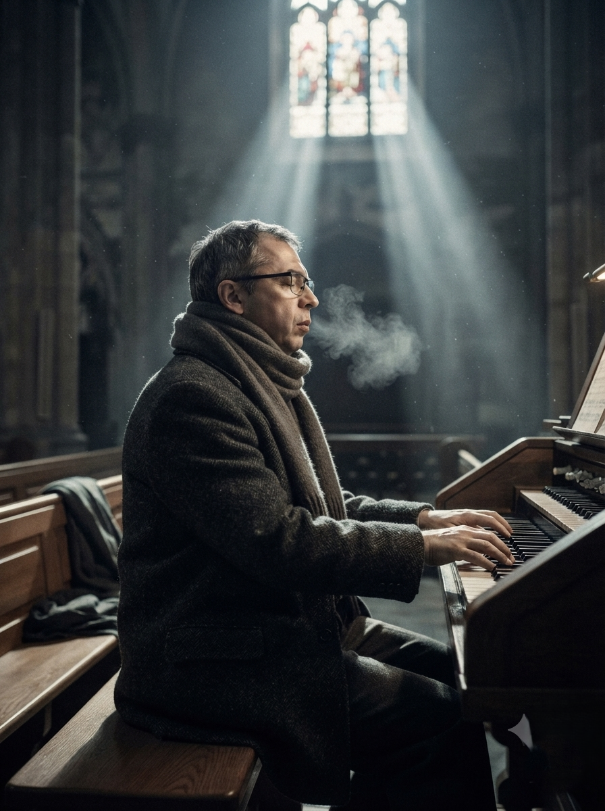
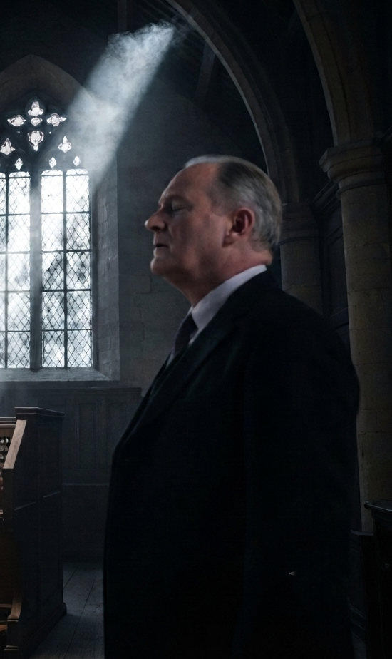
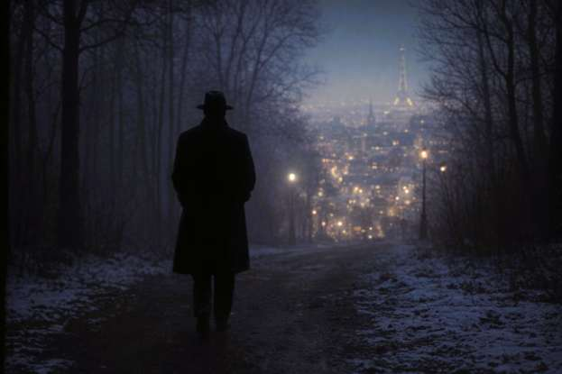
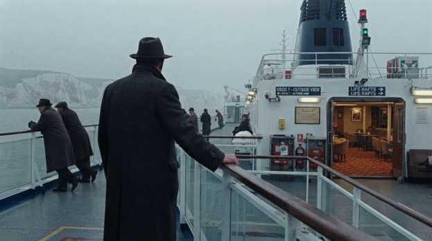
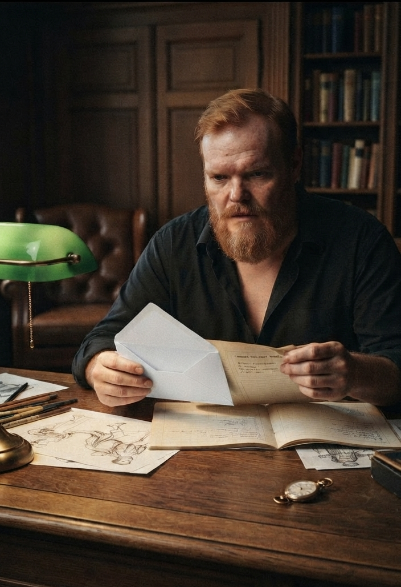
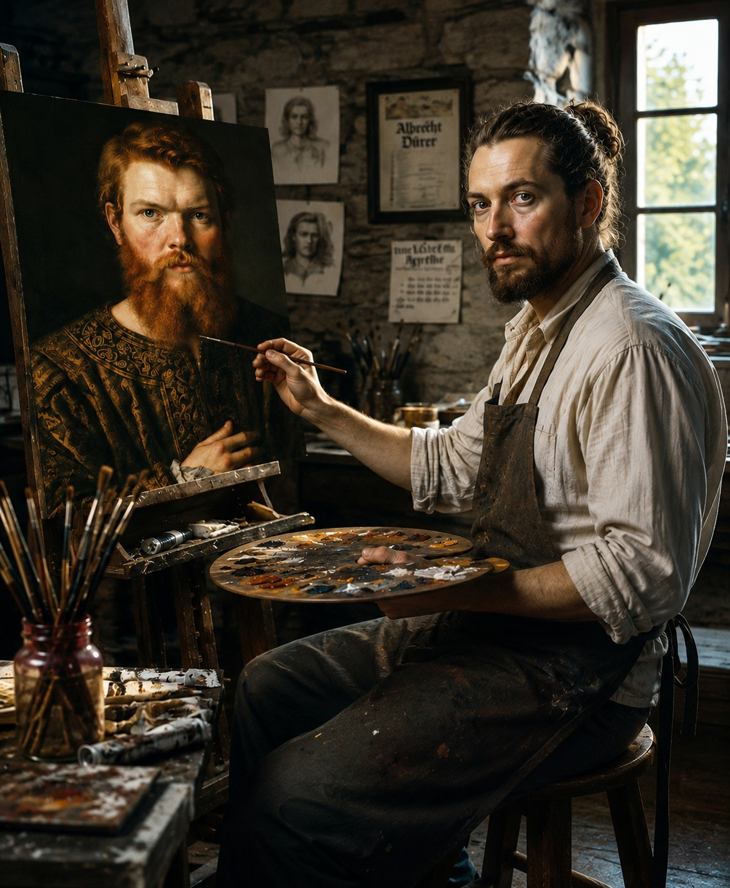
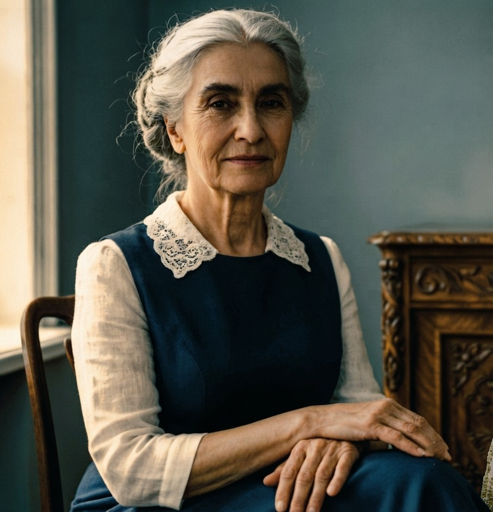

Второй звонок так и не прозвенел. В 1947 мир не стал безопаснее: старая бернская Сетка растворилась, уступив место жестким структурам новой эпохи.
В 1947 году скрытые оперативные каналы протянулись по оси Лондон — Париж — Марсель — Милан. За дипломатическими спорами вокруг Палестины разворачивался противоречивый израильский конфликт.
Первые заморозки Холодной войны ударили по культурным связям, превратив концертные залы и музыкантов в дипломатические инструменты: политические убийства планируются под музыку великих мастеров на подмостках великих сцен.
Фигуры на доске те же, но партия больше не принадлежит им. У каждой остался один ход. Каждый решает за себя, но решение порой принимают другие. Одуванчики – это выносливые многолетние цветы, которые каждый июнь отцветают, чтобы проснуться следующей весной.
КОРОЛЕВСКАЯ ОБСЕРВАТОРИЯ В ГРИНВИЧЕ
СПЕЦИАЛЬНЫЙ СИНОПТИЧЕСКИЙ ДОКЛАД:
ЗИМА 1946–1947 гг. АНОМАЛЬНЫЙ ПОЛЯРНЫЙ ФРОНТ («THE BIG FREEZE» [«Большие морозы»])
1. ОБЩАЯ СИНОПТИЧЕСКАЯ ОБСТАНОВКА
В январе 1947 года устойчивый арктический антициклон над Северным морем сформировал зону сверхнизких температур, охватившую Великобританию, Францию, Швейцарию и Северную Италию. Захваченные полярным фронтом регионы столкнулись с рекордным выпадением осадков и оледенением.
2. РЕГИОНАЛЬНЫЕ НАБЛЮДЕНИЯ И ПАРАЛИЧ ЛОГИСТИКИ
— Графство Кент и Юго-Восток Англии: Зафиксированы рекордные морозы (до -21,3°C). Снежные заносы высотой до 4 метров блокировали магистрали к Дувру. Поставки угля на электростанции остановлены.
— Франция (Париж): Температура опустилась до -18°C. Сена и судоходные каналы полностью замерзли. Аэропорты Орли и Ле-Бурже закрыты.
— Северная Италия (Милан): Аномальный снегопад сформировал покров в 40 см в центре Милана. Городской транспорт и аэропорт Линате не функционируют.
3. АЛЬПИЙСКИЙ КОРИДОР И МЕЖДУНАРОДНЫЕ МАРШРУТЫ
Движение по горным перевалам и Симплонскому тоннелю осуществляется в аварийном режиме из-за наледи. Поезда международных направлений задерживаются от 24 до 48 часов.
5 – 8 января 1947 г., Графство Кент, Гарлиндж
Алекс поселился в глухой деревушке, до Дувра на машине можно добраться за 40 минут, а на поезде — ещё быстрее. Ветхий дом повидал много горестей и радостей, теперь им предстояло подружиться: Алексу и его новой берлоге. Ключевым критерием, который перекричал все "но" и "всё же", была акустика: как это могло случится с деревенским домом — большая загадка. А может и не загадка вовсе, может так должно быть у всех, но не всегда получается...
Говорят, что старые дома дышат. Его дом не просто дышал, а переливался звонким дрожанием жестяной крыши, скрипами в диапазоне трёх октав, гулкими откликами стёкол в рассохшихся рамах на порывы ветра. Была современная ванна и домашний бойлер, которые солировали в пик своей активности настолько вдохновенно, что никто и не мог себе представить наличие другой доминанты, заправляющей настроением дома, нежели как медный бак с водными трубами и угольной топкой.
Большой домашней неожиданностью стал рояль. Старый, почти некрасивый, но настоящий. Трое слегка хмельных бездельников, праздно болтавшихся на деревенской площади (что недалеко от вокзала), были весьма любезны, ответив на коммерчески привлекательное предложение незнакомца с акцентом. Словарный запас Алекса не позволил в полной мере оценить красноречие, перемешанное с портовой бранью, потугами достойно выглядеть в глазах джентльмена и риском надорваться, когда они, перевернув тело рояля на длинный бок, протискивались в узкие проходы.
Рояль был не так уж и плох. Конечно, он ждал своего часа. Распаковывали его сутки, снимая одежду слоями: сначала брезент, потом шерстяное сукно, потом картон, потом снова сукно. Медленно раздевшись, он стал неоспоримым премьером этого дома. Теперь оставалось лишь настроить его под голос зимы.
Была середина января, и холод поселился в округе на законных основаниях, скрипя под сапогами прохожих, гудя в печных и каминных трубах, он не собирался отступать. А снег, так непривычно вольготно разложивший свои покровы по аккуратным фермерским угодьям, смешался с прошлогодней травой и совсем не намеревался таять. В сумеречный час грязное тучное небо сливалось с бескрайними серыми полями. Низко пролетел очередной самолёт, за последние четыре часа это был уже шестой транспорт. Активность на RAF Manston была крайне высокой.
Отойдя от дел, Алекс по привычке собирал разведывательные данные. Не записывал их, не передавал шифровки, не вербовал. Но продолжал всё регистрировать, анализировать и архивировать. Не по приказу, не по убеждению и даже не по инерции — он это делал для себя. Точно так же, как каждый день в течение 20 с лишним лет он играл разминку, потом что-то очень сложное, а потом — простое в технике, но сложное по содержанию. Играл каждый день. Без инструмента. В голове.
Рояль был идеально настроен: как и положено, два раза с интервалом 24 часа. Чтобы новые струны растянулись и дали усадку, и только потом их можно было сводить в строй. Настройщик был хорош: чисто выбритый и в белоснежной манишке — он приехал из Кентербери заранее и ждал у калитки назначенного часа. На следующий день он был также безупречен и малословен.
Закончив, он жестом пригласил Алекса попробовать звучание рояля, предварительно протерев белоснежной фланелью клавиши. Алекс тихо подошёл, одобрительно кивнул и аккуратно закрыл крышку инструмента.
Время пока не пришло.
Графство Кент, Гарлиндж
Он поселился в Гарлиндже из-за акустики его удивительного дома на краю океана. А крупнейшая военная авиабаза юга страны оказалась рядом по случайности. И также совершенно случайно Group Captain Stanislaw Zurawski [групп-капитан Станислав Журавски], тот самый, который радушно встретил его в декабре на Мальте, был её новым командиром.
На доске объявлений приходской церкви Св. Иакова, что была совсем неподалёку, большими буквами было написано о скорой замене её органа, который 74 года верой и правдой служил англиканской церкви на новый беструбный аппарат производства фирмы Compton.
Фирму Compton Organs Ltd. [Комптон Органы Лтд.] Алекс знал. На чертежах радарной сети Карибского региона, которые он так драматично получил через доминиканского дипломата, стоял их оттиск. Алекс мог бы заплатить слишком дорогую цену за эти бумаги. Но второй звонок тогда не прозвенел.
Алекс уже несколько раз приходил сюда. Старый орган церкви Св. Иакова будто знал, что совсем скоро его трубы снимут, меха разберут, а на их место поставят аппарат фирмы Compton — новую электрическую модель, которая не нуждалась ни в воздухе, ни в дыхании.
В послевоенном мире запчасти к органу, как и многие другие предметы, были в дефиците. Инструмент распродадут по частям, старый орган станет донором для других, более живучих.
Кентерберийский собор в силу своего статуса, репутации и возраста имел безоговорочное право сделать свой выбор первым; уже точно известно, что ему перепадут две трубы.
Сэр Аластер Макферсон, органист и руководитель хора Кентерберийского собора, был одним из самых авторитетных специалистов не только по органам, но слыл также большим знатоком органной музыки и был великолепным органистом.
Капельмейстер церкви Св. Иакова встретил его на вокзале. Макферсон прибыл с двумя помощниками. Утренняя служба уже закончилась, и они намеревались провести инспекцию органа на предмет необходимых им деталей и демонтировать трубы третьей октавы до наступления сумерек.

Макферсон почувствовал это прежде, чем услышал: Бах. Орган играл. Будто сам. Капельмейстер церкви насторожился, вопросительно посмотрел на гостей и ускорил шаг. Кроме него в здешних краях не было никакого другого органиста.
Несмотря на полдень внутри самой церкви было темно. Тусклый свет едва пробивался сквозь грязное восточное окно, но не рассеивал сумрак, а лишь подчёркивал его — делал воздух густым, не прозрачным, почти осязаемым.
Прощальная фуга си минор — последняя из сорока восьми в «Хорошо темперированном клавире» Баха, хроматическая, вобравшая в себя все двенадцать тонов темперированного строя.
Они тихо вошли, Макферсон жестом их остановил. Он хотел это слышать. Четыре случайных зрителя стояли в полутьме, от их дыхания поднимался пар, растворяясь в волшебном звуке.

Алекс играл на холодном инструменте с закрытыми глазами, чувствуя каждую клавишу и каждую педаль, играл так, будто они знали давно друг друга: этот пожилой орган и когда-то блиставший пианист.
Макферсон подошёл ближе, стараясь подтвердить физическое присутствие органиста и увидеть, как он с помощью несовершенного инструмента, создаёт совершенный звук. Он знал эту фугу наизусть, играл сотни раз. Но он не знал её такой.
Тусклый церковный сумрак, казалось, сгущался вокруг нот. Каждая из них не просто звучала — она светилась, как маленькая свеча в чёрной воде. Макферсон закрыл глаза. Звук стал видимым: нота соль в такте 47 задержалась на долю секунды — не ошибка, не дыхание, а сознательный выбор человека, который знает, что время можно остановить. Он видел, как голоса переплетались, как линии контрапункта становились золотыми нитями в сером февральском вечере.
Он уже забыл, что приехал разобрать этот механизм. Органист Кентерберийского собора замер в оцепенении.
Последний аккорд замер в воздухе, повис под сводами и медленно растаял.
Алекс открыл глаза, обернулся. Они смотрели друг на друга в тусклом свете восточного окна.
Макферсон представился, подошёл капельмейстер, приветственно кивнул, что-то хотел сказать, но передумал. Он узнал Алекса, он уже несколько раз бывал в церкви и однажды долго, очень долго рассматривал орган.
— Как вы это делаете? Так сейчас никто не умеет. Это великая школа… Кто вы? – Восхищённо спросил Макферсон.
Алекс посмотрел на него и прочитал: этот человек знает, о чём говорит.
Макферсон хотел сказать что-то ещё.
Алекс снова повернулся к клавиатуре. Положил руки на клавиши.
— Сэр Аластер Макферсон приехал за трубами. Две трубы. Третья октава. Для Кентерберийского собора. – пояснил капельмейстер.
Алекс не ответил. И начал следующую фугу. Закрыв глаза, плыл в звуке органа, повинуясь мышечной памяти, которая не подвела. Карнеги-холл. Тот же концерт, двадцать лет назад.
Он знал эту музыку, а музыка знала его.
Последняя фуга угасла. Тишина вернулась в церковь, но теперь она была другой — наполненной, живой. Алекс медленно убрал руки с клавиш. Открыл глаза. Посмотрел на свои пальцы, потом на Макферсона. В этом взгляде не было ни гордости, ни смущения. Только спокойное признание того, что произошло.
Макферсон стоял неподвижно. Его лицо было бледным, но глаза горели тем особенным огнём, который бывает только у людей, коснувшихся вечности. Он не задавал больше вопросов. Не спрашивал имени. Не требовал объяснений. Он просто кивнул — коротко, почти незаметно. Жест, понятный только двоим.
Капельмейстер церкви Св. Иакова нарушил молчание:
— Мы должны заканчивать, сэр Аластер, — сказал он шёпотом. — Свет уходит.
Макферсон моргнул, словно очнувшись. Перевёл взгляд с Алекса на окна, где сумрак действительно сгущался. Кивнул.
— Да, — тихо сказал он. — Пора.
Алекс провёл рукой по клавишам, попрощался с органом как с давнишним приятелем, ловко переместился на край скамьи, резко встал, размеренно направился к выходу.
— Благодарю вас, — Алекс впервые ответил.
— Мы ещё обязательно увидимся, — обронил Макферсон.
— Быть может, — любезно ответил Алекс, давая понять, что разговор закончен.
Алекс шёл от церкви к дому. В ушах ещё звучал орган. Пальцы помнили клавиши, но болели. Он потянул сухожилие на левой руке.
Встреча с незнакомцем была крайне странной: как в такой глуши мог оказаться один из лучших специалистов страны? Имя Макферсона ему было знакомо, но он никак не связывал его со своим опытом в Вене, Лейпциге. Но, видимо, зря.
Тот проницательный и понимающий взгляд: цепкий, профессиональный. Алекс понял: Макферсон его считывал, точно также как сейчас Алекс считывает его.
Алекс остановился на середине улицы. Ветер с моря. Жуткий холод. Запах угля и гниющих водорослей. Он повернул голову. В сторону церкви. Он знал, что внутри её копошились рабочие, разбирая декоративный деревянный фасад чтобы вытащить две длинные металлические трубы, отвечавшие за яркий и пронзительный тембр инструмента.
Орган умирал.
Графство Кент, Гарлиндж
Капельмейстер церкви Св. Иакова — пожилой, сутулый, с красным носом и вечно мокрыми от снега ботинками — появился у дома Алекса через три дня. Он какое-то время топтался на пороге, делая вид, что тщательно вытирает ноги. Он не знал как начать. И как говорить.
— Приглашение, — сказал он, протягивая конверт с сургучной печатью. — От епархии Кентербери. Лично вам.
Алекс взял конверт. Внутри — официальный бланк с гербом Кентерберийского собора. Подпись: Сэр Аластер Макферсон, органист и руководитель хора Кентерберийского собора.
— Я сказал ему, что ничего про вас не знаю и тогда вы впервые играли. Но я, конечно, самоучка, почти… Но я слышал, я знаю - вы играете так, как никто в этих краях, — продолжал капельмейстер. — Что вы — человек Божий. Что вы сразу поняли мой инструмент. Я играю на нём 38 лет. Простите, играл… Но я не знал, что он так может…
Алекс смотрел на подпись. Макферсон.
— Что ещё вы сказали ему обо мне?
— Ничего. Что вы живёте здесь в тишине, и что Берт с друзьями недавно вам притащили рояль, а потом у одного из них, кажется у Артура, грыжа… Простите мою болтливость. Позвольте откланяться, господин Планта, виноват, фон Планта…
Капельмейстер ушёл. Алекс остался стоять с конвертом в руках.
19 января 1947 года
Достопочтенному господину Александру фон Планта,
Гарлиндж, близ Дувра, графство Кент
Милостивый государь,
Я дерзаю просить Вас пожаловать в Кентерберийский собор для личной встречи, которая могла бы состояться в удобный для Вас день на следующей неделе.
Остаюсь с совершенным почтением,
Сэр Аластер Макферсон
Органист и руководитель хора Кентерберийского собора
PS: Жду Вас 23 января, в 10:00.
Он перечитал письмо дважды. Автоматически отметил: старомодные немецкие обороты, которые не переводятся на английский, диссонанс постскриптума: формально чёткого и не оставляющего выбора.
Макферсон знает о нём больше, чем говорит. Кентербери его ждут не только для музыки.
Кентербери
Дорога до Кентербери была слишком короткой чтобы переключиться от деревенской жизни на ритм города. Поезд тронулся ровно в 9:05 от Минстер-ин-Тэнет. Алекс сел во второй класс — не ради экономии, а потому что там было больше народа, а значит теплее. Вагон качало на стыках, ритм был знакомым, почти домашним. За стеклом — серые поля Кента, корка льда и снег, не таявший шесть недель.
Мороз держался ниже −5°C даже в полдень. В деревнях лопались неглубоко закопанные трубы, воду грели на плитах, экономя уголь по горсти. Школы открывались, только когда мороз чуть отпускал — и те, кто раньше сбегал с уроков на рыбалку, теперь сидели за партами не из прилежания, а потому что дома было холоднее, чем в классе. К полудню улицы пустели. Пабы закрывались раньше обычного. Война кончилась, но зима сорок седьмого продолжалась.
Canterbury West встретил тем же серым светом и ветром, что пробирает сквозь пальто. От вокзала до собора — десять минут по St Radigund's Street. Брусчатка подо льдом, Алекс шёл медленно, чувствуя, как холод забирается в ботинки. Он не спешил.
Собор стоял над городом каменным островом среди застывших крыш. Главный собор англиканской церкви, резиденция епископа — древний католический храм, который вместе со страной сменил веру и обычаи.
Алекс поднял взгляд на шпиль и подумал о Бахе: тот был лютеранином до костей, но писал не для Бога — для человека. Значит, и сегодня он будет играть не для тех, кто услышит, а для себя — того, кто слишком долго этого ждал.
Взгляд скользнул выше, в серое небо над шпилем — и воздух вдруг стал влажным, густым, как двадцать лет назад в соборе Святого Христофора, 1927 год. Там акустика была другой: вязкой, бархатной, звук не летел под своды, а обволакивал, как жаркий ветер с Малекона. Он играл там в последний раз перед тем, как исчезнуть. Перед тем, как стать никем. Играл так, будто прощался с собой.
— Доброе утро и добро пожаловать, — голос клерика вернул его в Кентербери, в холод, под серое английское небо.
Клерик учтиво указывал на массивную дверь с коваными петлями. Алекс сделал шаг внутрь. Дверь закрылась за спиной, отрезая ветер. Тишина собора приняла его — не та, деревенская, которую он знал по Гарлинджу, а иная: каменная, древняя, весомая. Она давила на уши, как после долгого пребывания в воде.
Алекс стоял в притворе, давая глазам привыкнуть к полумраку. Три выхода. Два боковых — узкие арки, уводящие в капеллы. Один главный — дубовая дверь за спиной. Лестница на хоры справа, за колонной. Проход к ризнице слева. Он не думал об этом. Просто видел. Тело помнило рефлексы быстрее, чем голова успевала их оформить.
Он никогда не был в Кентербери. Но соборы устроены одинаково. Каждый — лабиринт, где важно знать, где выход, где тень, где звук держится дольше всего. Архитектура была той же музыкой. Только застывшей.
Голос клерика вывел его из этого сканирования:
— Сэр Аластер ждёт вас у органа. Прошу следовать за мной.
Они прошли через неф. Свет лился сквозь витражи, но не грел, не освещал — только окрашивал камень в тусклые, холодные тона. Алекс шёл медленно, чувствуя, как холод от брусчатки поднимается по ногам. Он видел пространство иначе, чем паломник или турист: где можно укрыться, где пройти незамеченным, где акустика позволит услышать шаги за спиной.
Макферсон ждал у органа. Стоял боком, смотрел на клавиатуру, но услышал шаги раньше, чем увидел.
— Вы пришли, — сказал он. Без удивления. Без приветствия. Как человек, который знал, что придут.
— Вы пригласили.
Макферсон повернулся. Улыбнулся — сдержанно, как улыбаются тем, кого уже оценили, но ещё не приняли окончательно.
— Я хочу, чтобы вы сыграли на этом инструменте. Здесь, в соборе. Это не церковь Святого Иакова. Совсем другое пространство. Другая акустика.
— Я заметил.
— Тогда прошу.
Макферсон отступил, жестом приглашая Алекса занять место. Жест был безупречным. Слишком безупречным.
Алекс подошёл к органу. Провёл пальцами по краю клавиатуры. Тёплое дерево. Чистота. Инструмент жил — он чувствовал это кончиками пальцев раньше, чем услышал первый такт. Голос, который молчал слишком долго.
— Вы знаете, — сказал Макферсон, пока Алекс садился, — я думал о нашем разговоре, той встрече. Вы не ответили на мои вопросы. Но я понял одно: вы — человек, который понимает музыку. Не просто играет. Понимает.
Алекс поднял глаза. Внутри — холодная ясность. Он заманивает меня. Тщеславие. Возможность сыграть на главном органе Англии, просто войдя с улицы. Профессиональный приём. Алекс узнал его — сам пользовался им десятки раз. Вербовка через страсть. Через единственное, что осталось нетронутым.
Но это не значит, что я не хочу играть на этом органе.
— Я не уверен, что понимаю, — сказал Алекс.
— Вы играли Баха так, как играют те, кто слышал его в оригинале. Не в переложении. На органе. Я прав?
— Я играл, как умею.
— Именно.
Макферсон замолчал, давая пространству заполниться тишиной. Тишина была густой, вязкой. Она требовала ответа.
Он положил руки на клавиши. Закрыл глаза.
И начал играть.
Это была не фуга. Хоральная прелюдия Ich ruf zu dir, Herr Jesu Christ [Взываю к Тебе, Господи Иисусе Христе]. BWV 639. Три голоса. Простые, прозрачные, как слёзы. Мелодия в сопрано пела молитву, альт вздыхал, бас держал землю. Звук рождался не из труб — из камня, из морозного воздуха, из самой тишины собора. Каждая нота была светлой. Хрупкой. Как дыхание ребёнка во сне.
Алекс играл и впервые за двадцать лет не думал ни о чём. Ни о вербовке. Ни о Париже. Ни о Марте. Только о звуке. О том, как три голоса дышат вместе. Как строят мост между небом и землёй.
Когда последняя нота затихла, тишина вернулась. Но она была другой. Наполненной. Живой.
— Я хочу предложить вам нечто, — сказал он наконец, не глядя на Алекса. Глядя на трубы. — Концерт. Благотворительный. В Лондоне. В поддержку свободного еврейского государства. Будут люди значимые. Те, чьи имена редко звучат вслух, но чьи решения меняют карту мира. Вы могли бы стать частью этого вечера. Возможно, вы не ищете признания, но…
— Но?
— Но такие возможности не приходят дважды, — Макферсон посмотрел на него. Взгляд был прямым, почти вызывающим. — Я вижу, что вы умеете. Другие тоже должны увидеть. В достойной обстановке.
Алекс молчал. Внутри шла борьба. Шпион кричал: это ловушка. Музыкант шептал: это шанс. Он знал, что заманивают. Знал, что используют. Но инструмент перед ним был живым существом, которое двадцать лет ждало именно таких рук. Отказаться означало предать себя. Согласиться — рискнуть быть использованным.
Он выбрал третье. Позволить себя очаровать. Контролируемо. Осознанно. Как позволяют себе падение, зная, что внизу есть страховка.
И начал играть.
Звук был иным. Не тем, что в Гарлиндже. Под высокими сводами Кентербери каждая нота рождалась не из трубы, а из камня. Голоса Баха не летели вверх — проходили сквозь стены, сквозь время, сквозь самого Алекса.
Он играл фугу. Не си минор. Другую. Ту, что требовала иного дыхания.
Макферсон слушал, не дыша. Когда Алекс закончил, тишина повисла под сводами и не хотела уходить.
— Вы… — начал Макферсон и замолчал. Потом покачал головой. — Вы говорите, что не органист.
— Я пианист.
— Но вы играете так, как играют те, у кого была великая школа. Та же школа, что и у меня. Лейпциг? Вена?
— Берлин: там у меня был учитель, — сказал Алекс, не поднимая глаз. — Он заставил меня играть на органе. Не потому, что я хотел. Потому что считал: без органа нельзя понять Баха. Я не хотел, но он был прав.
Макферсон кивнул. Медленно.
— Бузони?
Алекс поднял глаза. Впервые за разговор посмотрел на Макферсона в упор.
— Он понимал: фортепиано — это перевод. А Бах писал не для перевода.
Макферсон не стал спрашивать дальше. Он понял: Алекс сказал правду. Не всю, но настоящую.
— Я хочу показать вам кое-что, — сказал он. — У меня есть небольшая библиотека. Скромная. Но там стоит сносный инструмент. Если вы не против — продолжим там. В более приватной обстановке.
Алекс задержался на мгновение.
— Хорошо.
Библиотека Макферсона находилась в боковом крыле собора. Когда дверь открылась, Алекс понял: это не библиотека органиста. Это был кабинет.
Стол — массивный, дубовый, с чётким разделением пространства: место для начальника и пространство для подчинённых. Стулья расставлены так, словно здесь проходят совещания. Восемь мест. Десять. Книги по стенам — но их роль была декоративной. Не для чтения. Для статуса. Макферсон был не просто органистом. Он управлял. Принимал решения. Отдавал приказы.
В углу стоял рояль. Не в центре. В углу. Как трофей. Как доказательство.
Алекс узнал его сразу. Steinway & Sons [Стейнвей и Сыновья]. Модель D. Концертный рояль. Инструмент, который стоит целого состояния. Который не может себе позволить органист собора, даже самый высокопоставленный.
Алекс медленно подошёл к нему. Провёл пальцами по крышке. Дерево было идеальным. Механика — безупречной. Этот рояль стоял в углу не случайно. Он был здесь, чтобы производить впечатление. Говорить без слов: я могу позволить себе то, что не можешь ты.
— Вы удивлены, — сказал Макферсон, заметив взгляд Алекса.
— Это не сносный инструмент, — ответил Алекс. Голос был ровным. Но внутри всё сжалось. Почему не в центре? Почему в углу? — Это рояль высшего класса. Вы органист, сэр Аластер. Органисты редко покупают такие инструменты.
— Я люблю музыку, — Макферсон улыбнулся прежней, сдержанной, оценивающей улыбкой. — В разных её проявлениях.
— Замечательно, — сказал Алекс. И впервые за визит позволил себе искреннюю реакцию. Не шпионскую. Музыкальную. — Тогда, может быть, я смогу сыграть на нём?
— Я на это и рассчитывал.
Алекс сел за рояль. В этот момент он почти забыл, зачем приехал. Почти. Музыка заполнила всё. Он играл и не анализировал. Не считывал. Просто играл.
Телефон на столе звякнул. Один раз. Резко. Как выстрел в вате.
Макферсон замер. Посмотрел на аппарат. Потом на Алекса. В глазах мелькнуло что-то новое. Не раздражение. Срочность.
— Простите, — сказал он, подходя к телефону. Поднял трубку. Послушал. Коротко. Молча. Повесил.
Обернулся. Лицо стало официальным. Холодным.
— Епископ вызывает. Дело срочное. Мне нужно отлучиться минут на тридцать.
Алекс кивнул. Он знал эту игру. Внезапный уход. Проверка реакции. Что сделает человек, оставшись один в кабинете с ценностями?
— Я подожду.
Макферсон подошёл к книжному шкафу. Достал тонкую тетрадь в кожаном переплёте. Положил на крышку рояля.
— Рукопись Баха. Автограф. Хоральная обработка. Редкая вещь. Почитайте, пока меня нет.
Алекс взял тетрадь. Кожа была тёплой. Пахла старым деревом и воском.
Макферсон вышел. Дверь закрылась. Щелчок замка прозвучал негромко, но в тишине кабинета отдался эхом.
Алекс остался один. Посмотрел на дверь. Потом на тетрадь. Потом на рояль. Заперт.
Он заметил это мгновенно. Инстинкт. Профессиональная деформация. Дверь заперта снаружи. Его оставили в клетке. С инструментом. С тишиной.
Он открыл тетрадь. Ноты были настоящими. Почерк — баховским. Но это не имело значения. Важно было другое: ему доверили ценность. Дали время. Дали пространство.
И он воспользовался им.
Сел за рояль. Играл. Не Баха — Рахманинова. Прелюдию соль минор. Op. 23, No. 5. Марциале. Тяжёлую. Страстную. Звук рвался из инструмента, как крик. Как память о доме, которого больше нет.
В смежной комнате со слуховым окном за маленьким столом сидел Иоахим Штольц. Тот самый швейцар из бернского театра, который учтиво кланялся Алексу каждый раз, протягивая номерок; который теперь здесь был как не-швейцар.
Макферсон тихо вошёл, закрыл дверь, приглушённо начал:
— Это он?
— Да, сомнений быть не может, я его часто видел, и кое-что знаю от Аргентинца, — ответил Штольц. Голос был ровным, без акцента. — В театре он ходил только в одну ложу, номер три, всегда один, всегда проверял хвост. Очень осторожный. Очень большой профессионал. За деньги сделает всё, что надо.
Макферсон не верил своим ушам: как такой музыкант может быть профессиональным убийцей. С сомнением посмотрел в ответ.
— Аргентинец сказал, что он лично утопил кого-то из доминиканского посольства. Ради радаров Compton.
Макферсон кивнул. Всё наконец сошлось. Радары Compton и органы Compton. Один уникальный профессионал — и он сейчас рвёт струны его драгоценного рояля, свирепо исполняя Рахманинова. Играет для него, понимая, что Макферсон слышит. Как профессионально. Как тонко.
— Он не знает, кто ты?
— Нет. Я для него — швейцар.
Алекс почти закончил. Дверь тихо отворилась — прошло всего двадцать две минуты, не тридцать. Макферсон стоял у входа, не столько слушая, сколько разглядывая Алекса.
— Великолепный Рахманинов, великий пианист. И, конечно, композитор. У вас тонкое понимание. И эта русская манера рвать струны… У вас много талантов.
Алекс почувствовал смену регистра. Сейчас будет главное.
— Вы знаете, я в силу своих обязанностей часто выступаю, меня приглашают. Признаться, это очень приятно. Мне только что Его Святейшество сообщил горькую для меня новость. Хотя, как знать…
Макферсон напускал таинственность, перешёл на недосказанности. Алекс даже не стал изображать заинтересованность — просто смотрел на органиста, который, кажется, взял в руки тромбон и не понимал, как на нём играть.
— Вы наверняка читали про большое событие: в Париже мы наконец подпишем мирные договоры, подведём черту этой ужасной войне.
Алекс был удивлён масштабом анонсируемого мероприятия.
— Там будет концерт, точнее должен быть концерт. Я предлагал министру утереть нос французам: чтобы я в этот торжественный вечер играл в Нотр-Даме. Вы понимаете, какое это имеет символическое значение! Особенно для нас.
— Сочувствую, — сказал Алекс ровно. — Нотр-Дам — великий собор. Я там никогда не играл.
— Вы могли бы, — Макферсон сделал шаг ближе. — Но, к сожалению, французы не оценили жеста. Новый президент, понимаете ли… Франции не стоит идти на поводу у Великобритании. Англиканскому органисту играть в Нотр-Даме — теперь это политическое заявление, а не музыкальное событие. Мне отказали.
— Не стоит, — Макферсон махнул рукой. — Но дыра образовалась. В программе. Салонный приём. Двадцать минут музыки между тостами. Они ищут замену.
— И вы предложили меня, — сказал Алекс. Не вопрос. Констатация.
— Я? — Макферсон улыбнулся, но глаза остались холодными. — Нет. Я предложил себя. Но теперь Епископ категорически возражает — не подобает по сану развлекать в салоне… куртизанок. Так он сказал. Я рассказывал ему о вас. И знаете, Его Святейшество просил, чтобы согласились именно вы. Он слышал ваш сегодняшний концерт. От начала до конца.
Алекс нахмурил бровь — ровно настолько, чтобы показать: он, разумеется, полагал, что его слушают. И в библиотеке тоже. Но говорить об этом вслух было ни к чему.
Или это тоже часть плана?
Алекс закрыл крышку рояля. Жест был спокойным, почти ритуальным.
— Я не играю на дипломатических приёмах.
— Вы играли в Карнеги-холле.
Алекс замер. Внутри — как удар. Он не говорил Макферсону о Карнеги-холле. Никогда. Ни слова.
— Вы думали, я не проверю? Ваша легенда безупречна. Обедневший швейцарский аристократ, без документов, без прошлого. И вы играете так, как не играют любители, — Макферсон вдруг перешёл на немецкий, без предупреждения, на чистом хохдойч: — Ich habe Leute angerufen: in Berlin, Leipzig, Wien... Glauben Sie mir oder nicht — es gibt noch einige, die Sie kennen, gut genug. [Я навёл справки: в Берлине, Лейпциге, Вене… Верите или нет, но нашлись люди, которые помнят вас, и весьма неплохо помнят.]
Алекс молчал.
— Im 1927 sind Sie verschwunden. Für die Welt sind Sie tot. Aber Sie leben. Und Sie sitzen in meinem Arbeitszimmer, spielen auf meinem Flügel und versuchen mich zu überzeugen, dass Sie nur ein Musiker sind [Вы исчезли в 1927, и для всех вы – мертвец. Но вы живой. И вы сидите в моём кабинете, играете на моём рояле и пытаетесь меня переубедить, что вы – всего лишь музыкант.], — Макферсон сорвался в полукрик, театрально взмахнув рукой.
Алекс понял: его сейчас не просто слушают. Его наблюдают. И органист Кентерберийского собора совершает первую в своей жизни вербовку. Он усмехнулся внутри.
— Я не пытаюсь вас убедить.
— Тогда зачем вы здесь?
— Я здесь, потому что вы пригласили. Я здесь, потому что я музыкант. Всё остальное — ваша фантазия.
— Фантазия, — повторил Макферсон. Голос снова стал ровным, будто вспышки и не было. — Хорошо.
Он подошёл к столу. Открыл ящик. Достал перстень. Положил на крышку рояля — не на стол, туда, где только что лежали руки Алекса.
— 10 февраля, Париж, Елисейский дворец. Салонный приём. Вы играете двадцать минут. Бах. Рахманинов. Что хотите. После концерта министр иностранных дел подойдёт поблагодарить вас. Через три минуты он умрёт. Вскрытие покажет инфаркт. Никаких следов.
Алекс смотрел на перстень.
— Почему я?
— Мне доложили о вас, — сказал Макферсон, тщательно подбирая слова. — Что в Берне вы ходили в оперу один, всегда в третью ложу, всегда проверяли, нет ли хвоста. Что вы очень осторожны. Профессионал. И что есть версия, будто вы имеете отношение к смерти одного человека из доминиканского посольства — из-за радаров Compton. Той самой конторы, ради которой разломали ещё вполне пригодный орган у вас в деревне.
Это был удар ниже пояса. И его Алекс пропустил.
— Сколько?
— Достаточно, чтобы потом вы об этом не спрашивали, — Макферсон кивнул на рояль. — Этот рояль. И манускрипт Баха. Годится?
Алекс молчал, но что-то внутри отметило: неточно. Ложа — да. Хвост — да. Но откуда взялся Пенья, если правды не знает никто, кроме него самого?
Он поднялся. Подошёл к двери.
— Я подумаю.
— У вас одна ночь, — сказал Макферсон. — Завтра в восемь утра жду ответа.
Алекс вышел.
В коридоре, за углом, Штольц стоял неподвижно, в тени. Он слышал каждое слово.
Макферсон подошёл к нему.
— Он согласится?
— Он уже согласился, — сказал Штольц. — Просто ещё не знает об этом.
— Ты уверен насчёт Пеньи? Насчёт радаров?
— Аргентинец так сказал, — Штольц пожал плечами. — Я передал, что слышал. За что купил.
Графство Кент, Гарлиндж
Подготовка к операции завершена. Алекс чувствовал, что и музыкальная, и оперативная части готовы очень хорошо. Он привёл себя в гораздо лучшую форму занимаясь по 3-4 часа в день на рояле и репетируя рукопожатие не менее 100 подходов в день. Манекен и макет руки, изготовленные из подручных материалов, к концу репетиций пришли в полную негодность.
Перед отъездом в Париж нужно было дать несколько поручений, заплатить хозяину дома за следующий месяц, разобрать почту.
Алекс сидел за кухонным столом. Перед ним — стопка писем. Тех, что он не читал, не хотел читать, но знал: должен. Дважды в неделю доверенный человек в Берне пересылал ему корреспонденцию, приходящую на имя Александра фон Планта. Официальную и личную. Всё, что могло подтвердить легенду.
Первое письмо было от Цюрихского банка. Подтверждение остатка на счёте. Цифры были скромными, но достаточными, чтобы не умереть с голоду. Он пробежал глазами, отложил в сторону.
Второе — от юридической конторы в Граубюндене. Касательно продажи семейного поместья. Формальности. Подписи. Сроки. Всё было решено ещё до его отъезда, но бумаги продолжали идти. Он прочитал до конца, отметил дату последнего платежа, отложил.
Третье — от бывшего управляющего, который писал, что земля продана, последние арендаторы съехали, дом стоит пустой, если он передумает, то… Алекс не дочитал. Всё это было игрой. Тенями, которые должны были придать его легенде плотность. Он отложил письмо.
Четвёртое — частное. От знакомого из Швейцарии, которого он никогда не видел, но чьё имя значилось в папке как "старый друг". Тот писал о погоде, о ценах на уголь, о том, что в этом году зима слишком суровая даже для Энгадина. Всё было точным, скучным, проверяемым. Алекс кивнул и отложил.
Осталась ещё одна бумага. Тонкая, неофициальная, без герба, без печати, обратный адрес – неизвестный ему пансион в предместьях Люцерна. Конверт был из дешёвой серой бумаги — такой, какую продают в канцелярских лавках для школьников. Почерк на конверте был детским, неровным, буквы прыгали, будто рука не успевала за мыслью.
Наверняка ошибка.
Он вскрыл. Внутри — лист бумаги, сложенный вчетверо, мятый, с пятнами от чернил там, где рука касалась ещё не высохшего текста. Почерк — тот же, детский, сбивчивый.
Он начал читать. И на первой же фразе замер.
Дорогой господин фон Планта.
Мне сказали, что вы живёте в Берне и что мама знала вас.
Меня зовут Майя-Роза. Несколько дней назад мне исполнилось 17 лет. В пансионе перепутали цифры и написали, что я родилась 27 июля, а на самом деле – 27 января. Я знаю, что это может быть важно.
Я живу в пансионе под Люцерном. Я никогда не видела своего отца. Мама никогда не говорила о нём. Маму я никогда не видела тоже. Мама умерла, а вот про отца я не знаю.
Но я хочу найти его. Я пишу всем, кто может знать. Мне сказали, что вы когда-то общались с мамой. Может вы что-то знаете о моём отце.
Если вы знаете что-то — напишите мне, пожалуйста. Я не хочу ничего, кроме одного: знать, кто он. Просто имя. Просто лицо. Я не буду его искать, если он не захочет. Но я хочу знать.
С уважением, Мая-Роза Пфланц
Он перечитал письмо восемь раз. Запомнил обратный адрес.
- Мая-Роза Пфланц, - вслух повторил он.
Париж, Елисейский дворец
Зал был переполнен. Хрусталь, тяжёлые портьеры, запах дорогих сигар и мокрой шерсти. Министр Бевин стоял в центре, окружённый свитой. Он смеялся, но глаза оставались холодными и уставшими. Вокруг немногочисленная свита. Официанты ловко маневрировали между голыми плечами дам и папками господ, которые дипломаты держали кто под мышкой, кто перекладывал из руки в руку.
Договоры подписаны. Полугодовая работа завершена. Приём в Елисейском дворце не столько ставил точку, сколько печать: победители закрепляли триумф. Каждая приглашённая делегация обеспечила короткое музыкальное представление, как бы продолжая дискуссию в плоскости настоящих нот, а не дипломатических.
Алекс стоял в стороне, рядом с лакированным Steinway & Sons. Модель D. Рояль молчал. Играло трио, кажется, что-то из Прокофьева — советская делегация. Алекс не слушал музыку. Он слушал комнату.
И вдруг услышал диссонанс.
Не в оркестре. В движении людей. В правом углу, за колонной, стоял человек в безупречном смокинге. Он не смотрел на Бевина. Он смотрел на пространство перед Бевиным. И двигался не в такт общему ритму зала — считал шаги. Раз. Два. Три. Готовился.
Алекс узнал его мгновенно: сначала по механике поклона, потом — по лицу. Швейцар из бернского оперного театра. Тот поймал взгляд и улыбнулся в ответ.
Алекс медленно перевёл взгляд в сторону, будто разглядывая лепнину на потолке. Внутри всё сжалось в одну ясную мысль: его проверяют.
Он сотни раз выверял это рукопожатие. Игла входила точно в межпальцевую складку у основания — plicae interdigitales [межпальцевые складки], он знал латынь не хуже, чем аппликатуру. По протоколу рукопожатие должно было следовать после этюдов. Но Алекс, никого не предупредив, поменял программу на вариации Гольдберга. Вычурное кольцо мешало играть чисто, а тридцать вторая вариация должна была оглушить и знатоков, и случайных гостей. Потом — сыграть легко, хорошо, без единой тени сомнения в пальцах. Ядовитое кольцо лежало в кармане жилета. Он был уверен: три четверти такта хватит, чтобы ловко его надеть.
Игра понравилась всем. Министр, строго соблюдая протокол, должен был лично поблагодарить музыканта прежде, чем наступит очередь исполнителей от Франции. Он шёл к Алексу, искренне протягивая руку на ходу.
Время остановилось. Личный хронометр Алекса встал — тот самый, что двадцать лет отсчитывал такты без единой ошибки. Пальцы не слушались. Кольцо цеплялось за подкладку кармана, не желая выходить. Но было уже поздно: министр стоял перед ним. Алекс перебросил ненадетое кольцо в левую руку, правой принял рукопожатие — тёплое, крепкое, искреннее — и одновременно сбросил левой рукой улику в вазу с цветами, стоявшую у рояля.
Он поймал этот взгляд через плечо министра: испепеляющий приговор фанатика читался в последней гримасе Штольца, спешно покидающего приём.
Подходили другие гости — дамы, джентльмены, тепло благодарили, просили сыграть на бис. Культурный атташе настоял на небольшом отрывке. Алекс не помнил потом, что играл.
Какой-то лакей, ничуть не смущаясь публики, подошёл к роялю, забрал полупустой бокал игристого и вазу с цветами.
Париж — Булонский лес
Такси подали быстро — слишком быстро для парижской ночи после большого приёма, когда весь квартал забит машинами дипломатов. Алекс сел на заднее сиденье, назвал адрес в девятнадцатом округе, тихую квартиру без имени на двери, и закрыл глаза.
Ему нужна была тишина. Не отдых — тишина. Пространство, в котором можно было бы разобрать по костям то, что произошло за последний час: рукопожатие, вазу с цветами, лицо Штольца, растворяющееся в толпе гостей с выражением человека, увидевшего предательство.
Машина тронулась. Свет фонарей на Елисейских полях скользил по векам сквозь закрытые глаза оранжевыми вспышками, ритмичными, как метроном. Алекс считал их — не нарочно, тело считало само, потому что тело всегда считало, даже когда голова была занята другим.
Один. Два. Три.
Потом фонари стали реже.
Он открыл глаза не потому, что что-то заподозрил. Он открыл их машинально, тем движением, которым человек проверяет время на часах, не думая зачем. За окном была не рю Манин, не привычная сетка узких улиц девятнадцатого округа. Деревья. Голые, чёрные, декабрьские — то есть февральские, но одинаково безлиственные, тянущиеся вверх, как частокол.
Булонский лес.
Он это зарегистрировал. Профессия, вбитая в позвоночник за двадцать лет, отметила факт мгновенно и без эмоций: маршрут неверен. Мы едем не туда. Это не тот случай, когда таксист плохо знает город — водитель ехал уверенно, слишком уверенно, будто дорога была ему знакома лучше, чем собственная ладонь.
И Алекс ничего не сделал.
Не постучал по стеклу перегородки. Не спросил, куда они едут. Не потянулся к ручке двери, чтобы оценить, заперта ли она изнутри — хотя тело уже знало ответ ещё до того, как рука коснулась металла. Он сидел, смотрел на деревья, и странная, вязкая апатия держала его крепче, чем держали бы верёвки.
Он был поглощён собой. Впервые за двадцать лет — собой, а не обстоятельствами. Кольцо в вазе с цветами. Взгляд Штольца. Три четверти такта, которые он потерял из-за тщеславия, а вовсе не из-за расчёта, — и это была правда, которую он не готов был признать даже себе. Он анализировал свой провал с той же одержимостью, с какой музыкант прокручивает в голове неверно взятую ноту после концерта, — и это самокопание оказалось сильнее инстинкта самосохранения, который должен был закричать: очнись, тебя везут не туда.
Машина замедлилась. Гравий захрустел под шинами — глухой, влажный звук, характерный для парковых дорожек, которые никто толком не чистит зимой. Фары высветили просвет между деревьями — небольшую поляну, озеро вдалеке, чёрное и неподвижное, как отполированный обсидиан. У кромки воды стоял автомобиль, тёмный, с выключенными фарами. Рядом с ним — две фигуры.
Только тогда Алекс окончательно вернулся в собственное тело.
Дверь такси открылась не изнутри — снаружи. Холод ворвался в салон вместе с запахом мокрой земли, прелых листьев и озёрной тины. Водитель не произнёс ни слова. Не обернулся. Просто держал дверь, глядя перед собой с равнодушием человека, которому хорошо заплатили за молчание.
Алекс вышел. Ноги затекли — не от долгой дороги, а от долгой неподвижности внутри собственной головы.
Водитель такси заглушил двигатель, погасил фары.
Тишина резала слух.
Макферсон стоял у машины, в чёрном пальто, без шляпы. Ветер трепал его седые волосы, и в тусклом свете, идущем откуда-то со стороны воды — то ли от далёкого фонаря на аллее, то ли от луны, пробившейся сквозь тучи, — его лицо казалось вырезанным из камня. Не то доброе, оценивающее лицо органиста, что слушало Баха в церкви Св. Иакова. Другое.
Штольц стоял чуть в стороне, у кромки деревьев, неподвижно, руки сложены за спиной — поза человека, который присутствует не как участник, а как гарантия.
— Идите сюда, — сказал Макферсон. Голос был тихим. Это было страшнее крика.
Алекс подошёл. Гравий скрипел под ногами — единственный звук, кроме ветра в голых ветвях и далёкого, едва слышного всплеска — то ли рыбы, то ли утки на воде.
— Вы понимаете, что вы сделали?
Алекс молчал. Молчание было единственной защитой, которая у него оставалась — как будто, не признав вслух, можно было отсрочить последствия ещё на несколько секунд.
— Я спрашиваю: вы понимаете?
Макферсон сорвался — не постепенно, а сразу, будто внутри него что-то лопнуло, натянутое слишком долго.
— Вы — дезертир! Вы взяли плату — рояль, манускрипт — и не выполнили работу! Знаете, что бывает с дезертирами? Мне достаточно одного звонка. Одного, — он поднял палец, будто демонстрируя набор номера незримому телефону, — в швейцарское консульство, в парижскую префектуру, куда угодно — и от вашей легенды не останется даже пепла. Александр фон Планта перестанет существовать быстрее, чем перестал существовать пианист в двадцать седьмом году.
Он подошёл ближе — так близко, что Алекс различил запах табака, смешанный с чем-то ещё, кисловатым, тревожным. Не одеколон. Страх, замаскированный яростью, — тот самый страх человека, который поставил на карту собственную репутацию и едва не проиграл.
— Вы играли для себя. Тридцать вторая вариация — надо же. Вы наслаждались собственной гениальностью, пока Бевин стоял в трёх футах от смерти, а вы вместо того, чтобы сделать одно простое движение, — потеряли три четверти такта на тщеславие!
Он не знал про вазу с цветами. Он знал только итог: министр жив, задание провалено, — и в эту версию событий укладывал всё, вплоть до последней детали, потому что альтернатива — что Алекс сознательно уничтожил улику — была для него немыслима. Люди, подобные Макферсону, охотнее верят в чужую слабость, чем в чужую волю.

Ветер прошёл над озером, рябь пробежала по чёрной воде, и где-то далеко, за деревьями, гуднула машина на бульваре — напоминание, что где-то ещё существует нормальный, безопасный мир, к которому у Алекса больше не было доступа.
— Сатисфакция, — сказал Макферсон, отступая на шаг, будто это слово требовало пространства для себя одного. — Вы получите шанс на сатисфакцию. Один. Через неделю — благотворительный концерт, тот самый, о котором я вам говорил. Только теперь это не просто вечер музыки. Это будет фурор. О вас напишут все газеты Лондона. Я стану вашим импресарио — Епископ уже дал согласие, — и вы будете ездить туда, куда нужно мне. Играть там, где нужно играть. И выполнять те поручения, которые вам будут давать. Без вопросов. Без тридцать второй вариации от себя лично.
Он выдержал паузу, глядя на руки Алекса — те самые, что подвели его час назад.
— И ещё, — добавил он, тише, почти буднично, будто сообщал расписание поездов, а не приговор. — Штольц будет рядом. На всех концертах. Проверять, чтобы всё прошло по плану.
Он повернул голову в сторону деревьев. Штольц не двинулся, но что-то в его неподвижности стало ещё плотнее, ещё внимательнее.
— Хочу, чтобы вы понимали, с кем имеете дело, — продолжал Макферсон. — Вальтеру, вашему человеку из Берна — тому, что помогал с доминиканцем, — Штольц лично вырвал обе барабанные перепонки. Не убил. Просто сделал так, чтобы тот больше никогда не услышал вопроса, который ему бы не хотелось услышать.
Тишина легла над поляной, тяжёлая, как крышка на инструмент.
Где-то в темноте озеро ответило коротким всплеском — рыба ушла на глубину, туда, где не достаёт свет.
— Это на всякий случай, — сказал Макферсон. — К сведению.
Макферсон постоял ещё секунду. Посмотрел на Алекса — не с яростью уже, а с чем-то похожим на усталое удовлетворение человека, сделавшего неприятную, но необходимую работу.
— Через шесть дней, — сказал он. — Я найду вас сам.
Он пошёл к своей машине. Дверь закрылась с глухим, воспитанным щелчком — не хлопком, именно щелчком, как будто даже здесь, в лесу, посреди ночи, требовалась учтивость. Машина тронулась без света фар, растворилась среди деревьев, и звук мотора стих быстрее, чем должен был, — будто лес сам проглотил его.
Штольц отделился от деревьев неслышно — будто вырос из тени, а не подошёл к ней. Прошёл мимо Алекса, не глядя на него, будто того здесь и не было, сел в такси, в котором приехал Алекс. Хлопнула дверь — на этот раз именно хлопнула, без учтивости, — и мотор завёлся, чихнув на морозе. Свет фар качнулся, скользнул по стволам деревьев, по неподвижной воде озера, по лицу Алекса — на долю секунды, ослепляя, — и ушёл прочь по аллее.
Тишина вернулась. Не та, что в церкви Св. Иакова, наполненная и живая. Другая — пустая, февральская, беспощадная.
Алекс остался один.
Гравий под ногами. Голые ветви над головой. Озеро — чёрное, неподвижное. Тишина.
Никакой машины. Никакого Макферсона. Никакого Штольца. Только ветер и собственное дыхание.
Он постоял несколько секунд. Потом начал идти. Не знал куда — просто вперёд, вдоль воды, подальше от места, где стоял Макферсон.
Холод входил в лёгкие, выходил паром. Ноги ступали по гравию, и каждый шаг был точным, как удар метронома.
Он думал.
Шесть дней до концерта. В Лондоне. Благотворительный. Макферсон будет за кулисами. Штольц — в зале. Концерт, который должен стать его дебютом. Который Макферсон превратит в клетку.
Если он сыграет хорошо — он станет заложником. Будут критики, публика, импресарио. Макферсон сможет требовать с него что угодно. И Штольц будет следить, чтобы он не уклонился.
Убивать кого-то из них или сразу обоих он не хотел. Мог, тысячу раз мог, но не хотел.
Есть другое решение. Если он сыграет плохо — концерт провалится. Макферсон потеряет к нему интерес. Станет бесполезным. Никто не будет его приглашать, не будет следить, не будет требовать.
Алекс остановился. Посмотрел на свои руки. Пальцы не дрожали.
Он может играть плохо. Может забывать ноты. Путать регистры. Сбиваться с ритма. Он может сделать так, чтобы никто никогда не захотел слушать его снова.
Он должен это сделать. Должен уничтожить свою репутацию, чтобы не брать еще один грех и спасти себя.
Он стоял на дороге. Света не было — ни фонарей, ни луны. Только голые деревья, чёрное небо и холод. Он смотрел на свои руки, и в голове была тишина. Не та, что в церкви — живая и наполненная. Другая. Пустая. Решающая.
И вдруг он сделал то, чего не делал двадцать лет.
В темноте, один, у озера, он поднял руки: пальцы замерли на воображаемых клавишах, он посмотрел на них, опустил руки, пошёл и вдруг понял, что именно сейчас, в этой темноте, он принял решение.
Если я могу играть вот так — без инструмента, без звука, без публики, — значит, мне не нужны ни сцена, ни признание, ни аплодисменты. Я могу играть для себя. Всегда. Даже если никто не услышит.
Теперь он знал, где выход. Теперь он знал, что будет делать.
Париж
Он вышел из Булонского леса через полчаса. Поймал такси. Назвал адрес в девятнадцатом округе. Доехал быстро. Дома, в своей маленькой квартире, он снял пальто, сел за стол и взял перо. Он не написал ни слова. Просто смотрел на чистый лист. Он хотел написать письмо Майе-Розе, но понял, что не сможет. Не раздеваясь, Алекс лёг на кровать, закрыл глаза. Спать не мог. Лежал неподвижно, в оцепенении и тишине.
Потом поднялся: было душно и тесно, Алексу нужен воздух и простор. Через три минуты он уже был на улице. Медленно шёл мимо витрин, не разглядывая их. Остановился.
Ателье на Рю Сент-Оноре оказалось здесь как нельзя кстати: фрак для лондонского концерта всё равно был нужен.
Здесь шили только на заказ. Никаких готовых вещей на вешалках — только рулоны сукна вдоль стены, от тёмно-серого до почти чёрного, и стол с журналами кроя, потрёпанными по углам.
Мастер — пожилой, в золотых очках на цепочке — разложил перед ним три отреза, спросил про повод. Алекс сказал: приём, Лондон. Выбрал сукно, почти не глядя — среднее по плотности, без блеска. Модель — классическая, однобортная, ничего лишнего.
Портной одобрительно кивнул, достал сантиметровую ленту, начал снимать мерки — плечи, рукав, объём в груди, — называя цифры вслух помощнику, который записывал их в тетрадь убористым почерком.
— Мне нужно к шестнадцатому, — сказал Алекс, когда мерки были сняты. — С доставкой в Дувр.
Портной оторвался от тетради, посмотрел поверх очков.
— В Дувр? Через канал? — он покачал головой, будто услышал что-то, требующее переспросить. — Не уверен, что это рационально, мсье. Забрать в салоне — пожалуйста, к концу месяца поторопимся. Доставка в Кале — тоже возможно, но тогда только к середине марта. А Дувр... это уже другая страна, другая таможня, другой пароход. Я такое не отправляю.
— Понимаю.
Портной снял очки — неторопливо, обеими руками, — протёр их платком, сложил дужки и убрал в футляр на столе. Щелчок замка прозвучал коротко, почти вежливо. Разговор был окончен, и он не собирался продолжать его ни словом.
— Как вам будет угодно, мсье, — сказал он, уже без очков, без прежней резкости во взгляде — просто человек, закрывший тему. — Позовите, если передумаете насчёт сроков.
Алекс поблагодарил, отказался от заказа, вышел.
На улице было холодно и обыкновенно. Мимо прошла женщина с корзиной хлеба. Где-то вдалеке гудел трамвай.
Он свернул к бульвару и через полчаса оказался у витрин «Галереи Лафайет» — универсального магазина, который после войны отстроился быстрее многих, торговал английским сукном и последними лондонскими фасонами, и уже второй год объявлял себя самым практичным адресом Парижа для тех, кому нужно было выглядеть прилично без промедления.
Он купил три готовых костюма. Не выбирал долго — размер подошёл почти сразу. Продавец, молодой, суетливый, торопился успеть до обеда — подгонял рукава булавками прямо у зеркала, быстро, слишком быстро.
Игла соскользнула.
Алекс почувствовал укол раньше, чем боль — острая точка под кожей на предплечье, там, где продавец закалывал манжету. Крохотная ранка, почти незаметная. Продавец рассыпался в извинениях, предложил йод, бинт.
— Пустяки, — сказал Алекс.
Но кровь не останавливалась. Небольшая, тёмная капля выступала снова и снова, сколько бы он ни прижимал платок. Продавец, разглядывая булавку, нахмурился:
— Простите, мсье, кажется, эта была не новая... — он покрутил иглу в пальцах, на кончике проступил рыжеватый налёт. — Ржавая, возможно. Такое иногда долго заживает.
Алекс посмотрел на свою руку. Крошечная ранка, ничего не значащая, — и всё же она не хотела закрываться, будто что-то внутри отказывалось затягиваться так же легко, как затягивалось всё остальное в его жизни последние двадцать лет.
Он прижал платок плотнее, кивнул продавцу, что всё в порядке, и подгонка продолжилась.
Продавец предложил йод ещё раз, Алекс отказался. Забрал свёртки, ушёл.
К вечеру рука начала пульсировать. Не сильно — тупо, ровно, в такт сердцу. Он осмотрел ранку перед сном: покраснение расползлось на сантиметр вокруг прокола, кожа была горячей на ощупь. Ничего серьёзного. Он видел раны хуже. Он решил не обращать внимания.
К вокзалу рука в предплечье опухла настолько, что двигать ей стало почти невозможно. Входя в вагон, он неловко задел рукой дверь тамбура, и боль отозвалась по всему телу.
Поезд Париж-Кале — Паром через Ла-Манш
Купе первого класса Париж–Кале было выкуплено целиком — вместе с двумя соседними. Никто не должен был видеть, никто не должен был слышать. Алекс сидел у окна, спина прямая, руки на коленях, взгляд неподвижный.
Поезд тронулся. За окном тянулись пригороды Парижа, серые, невыразительные, ещё не проснувшиеся до конца.
Через полчаса прошёл проводник — проверил билеты, коротко кивнул, ушёл дальше по коридору.
Предплечье горело нестерпимо, кожа вокруг старой ранки натянулась и лоснилась, тронь — и казалось, лопнет сама. Он не первый раз видел заражение и знал: ещё день, максимум два — и придётся искать врача, а врач — это вопросы, документы, память о пациенте с необычным акцентом. Роскошь, которой у него не было.
Он разложил на казённом полотенце то немногое, что у него было: опасную бритву, одеколон, пакетик сульфаниламидного порошка — трофей ещё с войны, из полевой аптечки, которую он так и не выбросил, — обрывок шёлковой нити, снятой с манжеты рубашки, и иглу, вынутую из лацкана пиджака.
Он подержал лезвие бритвы над пламенем спички, потом другой, потом ещё одной: пока сталь не почернела от копоти, потом протёр копоть одеколоном. Плеснул им же на кожу вокруг раны — защипало.
Резать левой рукой правое предплечье оказалось не так, как он себе представлял. Пальцы, привыкшие к точности на клавиатуре — миллиметры между чёрной и белой клавишей, — здесь работали иначе: не быстро, а медленно, с той же концентрацией, с какой он держал темп в самой трудной фуге, только теперь метрономом была собственная боль.
Надрез был чуть больше сантиметра. Гной вышел сразу — тёмный, с рыжеватым оттенком, тот самый, что продавец назвал ржавчиной. Алекс сжал зубы, надавил у основания ранки, выдавливая до тех пор, пока не пошла чистая кровь.
Он промыл разрез остатками одеколона, дал крови немного вытечь, потом взял иглу с нитью. Швы получились неровными — три стежка, грубые, как штопка на старом носке. Левая рука плохо слушалась, пальцы дрожали не от страха — от того, что нерв, задетый разрезом, отзывался при каждом движении острой, короткой вспышкой.
Закончив, он присыпал шов сульфаниламидным порошком — щедро, не жалея, — обмотал полотенцем, туго, но не пережимая.
Убрал весь инвентарь. Боль начала уходить.
Неожиданно в проёме показался человек в форме военного врача — тёмно-синяя, с красным крестом на рукаве, фуражка, которую он снял сразу у двери. Взгляд узнаваемый, цепкий, профессиональный. Но что-то в нём было другим. Не тем, к которому Алекс привык у чужих.
Незнакомец сел напротив, не спрашивая разрешения.
Молчание. Доктор задержался на перевязанной руке — на секунду дольше, чем требовало простое любопытство, — потом медленно, будто невзначай, скользнул по лицу Алекса, по воротнику рубашки, по костяшкам правой руки. Искал что-то ещё. Не нашёл. Кивнул сам себе, едва заметно, будто закрыл вопрос, который вслух не задавал.
Он расстегнул пальто, достал из-за пазухи книгу — томик Фауста в твёрдом переплёте, с застёжкой в виде маленького замка, латунного, потемневшего от времени. Странная предосторожность для книги — будто внутри было что-то, что не полагалось читать случайному взгляду. Ирония не ускользнула от Алекса даже сейчас, в оцепенении непонимания: договор с дьяволом, запертый на замок.
Он не знал, что делать с этим жестом. Молчал.
Незнакомец достал из внутреннего кармана сложенную газету — парижскую, утреннюю, — развернул и протянул через узкий столик. На развороте — хвалебная рецензия о вчерашнем приёме, об открытии сезона, о неизвестном исполнителе из Швейцарии, чья игра, по словам критика, «заставила замолчать даже самых искушённых слушателей».
Алекс смотрел на газету. Он не понимал, что происходит. Слишком много деталей сразу, слишком мало объяснений.
Тогда врач взялся за замок Фауста. Тонкие пальцы, привычные к точной работе, повернули крошечный ключ, спрятанный, видимо, в подкладке рукава. Переплёт раскрылся — и внутри, в вырубленном углублении среди страниц, лежало кольцо.
То самое.
Алекс не пошевелился. Внутри — холодная волна узнавания, ещё не оформленная в слова.
Врач протянул листок дешёвой бумаги, исписанный убористым, каллиграфическим почерком по-французски. Алекс читал медленно, слово за словом. Консервативное крыло — так было сказано в письме, — категорически отвергающее преступные методы решения политических вопросов, выражало высочайшую признательность господину Александру фон Планта. Его мужество и самоотверженность не позволили сорвать переговоры о создании независимого еврейского государства на землях Палестины. Поступок, совершённый по зову чести, заслуживал самой достойной оценки и благодарности.
Алекс поднял глаза от письма — туда, где сидел человек в форме военного врача. И тогда понял.
Лакей. Тот самый, что унёс вазу с цветами с крышки рояля, спокойно, буднично, будто ничего не произошло. Он видел всё. Он оказался рядом в единственно нужный момент.
Врач молчал. Не произнёс ни слова — ни тогда, ни сейчас. Алекс смотрел на него вопросительно, не зная, как вести разговор с человеком, который не отвечает.
Врач улыбнулся. Показал жестом — коротким, почти небрежным движением руки над столиком: пиши.
Алекс не знал, на чём писать. Взял газету — ту самую, с рецензией о собственном триумфе, — и на полях, рядом с колонкой похвал, написал одно слово: Merci.
В этот момент поезд резко затормозил. Толчок бросил Алекса вперёд, к столику; чашка кофе, которую он так и не тронул, качнулась, выплеснув немного тёмной жидкости на блюдце. Где-то в соседнем вагоне звякнула цепочка стоп-крана.
Врач поднялся мгновенно, без единого лишнего движения. Не сказав ничего, вышел из купе.
На столике остались Фауст и кольцо.
Алекс сидел неподвижно, слушая, как поезд замедляется рывками, как где-то впереди хрипит тормозная система, как голоса в коридоре становятся тревожнее, громче. Минуты растягивались.
Врач вернулся. Одежда была немного не в порядке — воротник чуть сбился, один погон приподнят, — он машинально поправил его на ходу, входя в купе. Улыбнулся снова, на этот раз мягче, почти по-домашнему, достал из кармана маленький бархатный мешочек на шёлковой бечёвке, кивнул в сторону перевязанной руки и положил перед Алексом — не на середину стола, а ближе к раненой руке, будто адресовал не столько человеку, сколько самой руке.
Свои вещи он забрал — Фауст, кольцо, газету с надписью — одним быстрым жестом, спрятал в карман пальто.
— Merci, camarada [Спасибо, товарищ], — сказал он. Голос был первым, что Алекс от него услышал, — низкий, с сильным славянским акцентом, наложенным на испанские слова, перемешанные с французскими, будто человек учил язык не в классе, а в окопах, среди других таких же голосов, привыкших к смеси наречий братства, где национальность значила меньше, чем сторона фронта.
— Spasibo, tovarishch! [Спасибо, товарищ!] — подумал Алекс, но промолчал.
Врач вышел.
Поезд подходил к станции. Остановился — не торопясь снова тронуться, как бывает при плановой остановке. Свинцовое небо над путями медленно светлело, кое-где в разрывах туч проступали бледные голубые просветы — первые за всю зиму, будто природа сама, наконец, устала от давления.
Из соседнего вагона бригада санитаров выносила носилки. Ими руководил лакей — теперь с усиками, приклеенными наспех, чуть съехавшими набок, в белом халате поверх ливрейного костюма, который он не успел до конца снять.
Носилки пронесли мимо окна Алекса. На секунду процессия задержалась — санитары перехватывали груз поудобнее, — и в этот миг тёмная армейская накидка, которой было укрыто тело, сползла с лица.
Алекс смотрел, не дыша. Распухшее, обезображенное, но узнаваемое лицо. Штольц.
18 февраля 1947 года, Графство Кент, Гарлиндж. Алекс стоял посреди пустой комнаты. Чемодан уже был собран. Пальто висело на крючке у двери. Ключ лежал на столе, рядом с конвертом для хозяина дома.
Казалось, что целая вечность успела случится за ночь; казалось, что столичный Лондон и провинциальная деревушка в графстве Кент находились в разных полушариях: лакированные ботинки джентльменов, меховые накидки дам, блеск брильянтов и неслышная мягкость персидских ковров, хрустальные бокалы и смолистые сигары, золотые бинокуляры и элитный парфюм – все это было вычеркнуто и полностью забыто.
Теперь он свободен делать свой выбор, не оглядываясь на Макферсона и его весьма настойчивых заказчиков, которые не купились на идеи «Сэра Главного Органиста» организовать второе рукопожатие.
Никто бы не купился.
И если Макферсон останется в бодром уме и крепком здравии после таких обещаний и нулевой реализации, то должен он будет поставить большие свечи за спасение души своей грешной…
Впрочем, не он один.
Алекс посмотрел на рояль.
Крышка закрыта. Брезент, сукно, картон — всё, что он снимал сутки, когда распаковывал его. Теперь он снова укутывал инструмент, как ребёнка перед зимой.
Прислушался: дом дышал, жестяная крыша переливалась звонким дрожанием. Скрипы в диапазоне трёх октав. Гулкие отклики стёкол в рассохшихся рамах на порывы ветра. Медный бак с водными трубами и угольной топкой солировал в пик своей активности.
Всё было как в тот первый день. Только теперь он знал: больше никогда.
Он подошёл к роялю, развязал бечевки и освободил крышку.
Пальцы легли на клавиши. Холодные. Чистые. Он не стал играть Шопена — это было бы пафосно. Не Рахманинова — это было бы слишком тяжело. Не Баха — это было бы слишком честно.
Он сыграл "К Элизе". Бетховен. WoO 59.
Не в богатой аранжировке, как играли виртуозы. А по-ученически просто. Ясно. Точно. Как будто он снова был тем мальчиком, который впервые сел за инструмент и понял, что музыка — это не звук. Это дыхание.
Последняя нота замерла. Он не стал повторять. Не стал играть на бис. Не для кого.
Он закрыл крышку. Медленно. Как закрывают глаза покойнику.
Затянул бечёвки — туго, один узел, другой — как заколачивают гвозди.
Поправил картон, обернул плотнее, со всех сторон, будто сколачивал гроб по мерке.
Перекрестился.
Обернулся. Посмотрел на комнату в последний раз. Пустые стены. Пол, который помнил его шаги. Окно, через которое он смотрел на все еще серые поля Кента, на авиабазу с рыжим капитаном Журавски, на самолёты, которые также взлетали и садились, как будто ничего не произошло.
Он не стал прощаться с домом. Он был не его: быстро оформленный в годовую аренду, он так и не впитал запах, ритм и тон своего постояльца. И хорошо, что не впитал.
Вышел. Закрыл дверь. Ключ — в конверт. Конверт — под коврик у входа. Хозяин найдёт.
Дом остался дожидаться хозяина. Рояль — под брезентом и сукном. Орган в церкви Св. Иакова — уже разобран, трубы увезены в Кентербери. Макферсон — где-то в Лондоне, если еще жив... Штольц — однозначно мёртв, в носилках, с распухшим лицом.
А Лакей?
Алекс шёл к вокзалу. Снег скрипел под каблуками ботинок с секретом. Дыхание выходило клубами пара.
Впереди – поезд, а потом паром и очень длинное железнодорожное путешествие в Марсель.
Там другой порт, другие корабли. Другой ветер и другое море.
Он не оглядывался.
Паром тронулся в половине одиннадцатого. Алекс занял купе у кормы — не потому, что любил вид на отступающий берег, а потому что там меньше людей, меньше голосов, меньше случайных взглядов. Он сел у окна, спина к стене, лицом к двери. Привычка, которая не отпускала двадцать лет. Дверь была деревянная, лакированная до блеска, с матовым стеклом в верхней части — тень в коридоре проступала за секунду до того, как кто-то входил. Достаточно.
Купе прокурили до него. Табак, пот, влажная шерсть пальто, вывезенных из Парижа в спешке. Алекс открыл окно на щель — мороз впрыснул в лицо, и он закрыл сразу. Лучше духота. Лучше чужой запах, чем этот холод, который не был похож на кентерберийский. Там холод был английский — влажный, ветреный, предсказуемый. Здесь — другой. Континентальный. Сухой, как пепел.
Он пытался не думать. Это было главное — не думать о вазе с цветами, о лице Штольца в носилках, о «Merci, camarada» в купе поезда. Но мысли не слушались. Они текли, как вода сквозь щели в трюме — медленно, неотвратимо, размывая то, что он пытался удержать.
Через час стало невыносимо. Душно. Не от табака — от себя. От запаха собственного пота, который пах не страхом, а чем-то другим. Чем-то, что он не мог назвать.
Он вышел на палубу.

Холод ударил сразу — не ветром, а стеной. Ла-Манш в феврале не штормил, он просто был. Серый, свинцовый, без горизонта — небо и вода слились в одно непрерывное дыхание, и невозможно было сказать, где кончается одно и начинается другое. Паром качало на волнах, которые не были высокими, но были упрямыми — поднимали, опускали, поднимали, опускали, как руки пианиста, играющего одну и ту же октаву.
Алекс подошёл к поручню. Металл был ледяным — он не надел перчатки, не думал, что выйдет. Пальцы прилипли к стали на долю секунды, и он отдёрнул руку. Боль была острой, почти музыкальной — чистой нотой в гуле мотора и всплесков.
Он стоял и смотрел.
Англия уходила. Не быстро — паром был медленным, грузным, — но уходила. Белый высокий берег, тусклые скалы, серые дома, которые казались точками на картине, которую кто-то забыл дописать. Он знал, что он возвращается туда, где был Париж, Булонский лес, ваза с цветами, перстень в кармане жилета.
Но знание это было абстрактным. Как нота на странице — она есть, но не звучит. А здесь, на палубе, в этом холоде, который проникал сквозь пальто, сквозь кожу, сквозь мышцы — здесь было только одно: движение. Вперёд. От берега. К другому берегу.
И тогда он подумал о Сибири.
Не потому, что хотел. Потому что холод был похож. Не тот же — сибирский холод, он знал, был другим: сухим, безжалостным, прозрачным, как стекло. Холод, который не просто замерзает — он очищает. Убирает всё лишнее. Оставляет только то, что может выжить.
Он никогда не был в Сибири. Но слышал о ней — от тех, кто был. От пианиста в Варшаве, который играл Шопена утром и революционные песни вечером, и который исчез в тридцать седьмом. От контрабандиста в Риге, который перевозил людей через границу и говорил о «бескрайних просторах» так, как говорят о тюрьме — с ностальгией, которую невозможно отличить от страха. От женщины в Берне, которая продавала часы и молчала о муже, который «ушёл на север».
Бескрайние сибирские просторы.
Он стоял на палубе парома, который плыл через Ла-Манш, и думал о земле, которую никогда не видел. О земле, где зима не отступает шесть месяцев, где снег лежит до июня, где деревья растут так медленно, что кольца их годовалые — тоньше человеческого волоса. Где мир был другим. Совсем другим.
Для него не было категории «хороший» или «плохой». Так он мог судить о людях — конкретных, измеримых, предсказуемых. Он знал, что Макферсон — лжец, но профессионал. Что Штольц — фанатик, но исполнителен. Что Лакей — неизвестность, но полезен. Он мог взвесить, оценить, классифицировать. Но не общности. Не системы. Не то, что лежало за пределами личного контакта.
Но теперь, стоя на палубе, чувствуя, как холод проникает в кости, он понял: он внутри системы, которую не выбирал. Воронка исторических событий — эта фраза пришла ему в голову, и он сразу отверг её как банальность, но она вернулась, потому что была точной — воронка исторических событий центробежной силой переместила его в палестинские пустыни, поддерживаемые сибирскими морозами и замешанные на жуткой религиозной вражде всех против всех.
Он не выбирал. Он не встал однажды утром и не сказал: «Я буду работать на создание еврейского государства». Он не пошёл в консульство и не попросил: «Дайте мне задание». Он просто играл Баха. Просто сбросил перстень в вазу. Просто сел в купе, из которого вышел Лакей с томиком Фауста.
Фауст был игроком.
Лакей принёс его Алексу не случайно. И Алекс оставил на газете слово. Своё слово. И слово — это петля.
Лакей не забирал у Алекса ничего. Он дал ему Легенду. Признание, единственную валюту, которую Алекс не мог напечатать сам. И Алекс взял. Не потому, что хотел. Потому что не мог не взять. Потому что пустота — хуже, чем любая цена.
Паром качнуло. Волна, более высокая, чем предыдущие, ударила в борт, и брызги полетели на палубу — не дождь, а морская соль, застывшая на ветру в мелкие иглы. Алекс не отошёл от поручня. Он стоял и чувствовал, как соль оседает на веках, на губах, на пальцах, которые снова прилипли к металлу, и снова отдёрнул руку, и снова почувствовал ту же острую, чистую боль.
Вашингтон, округ Колумбия
TOP SECRET. CENTRAL INTELLIGENCE GROUP. OFFICE OF REPORTS AND ESTIMATES
Вашингтон, округ Колумбия. NIE № 12/47, 18 февраля 1947 года.
ТЕМА: Палестинский вопрос. Оценка ситуации после объявления министром иностранных дел Великобритании Эрнестом Бевином о передаче вопроса на рассмотрение Организации Объединённых Наций.
ГРИФ: SECRET — ограниченный доступ
I. ТЕКУЩАЯ СИТУАЦИЯ (по состоянию на 18 февраля 1947)
18 февраля 1947 года министр иностранных дел Великобритании Эрнест Бевин объявил в Палате общин о передаче палестинского вопроса на рассмотрение Организации Объединённых Наций. Это решение принято после того, как Великобритания не смогла найти приемлемое решение ни для еврейских, ни для арабских сторон.
Контекст:
— Парижские мирные договоры подписаны 10 февраля 1947 года.
— Великобритания несёт бремя мандата с 1920 года.
— Еврейское восстание (Иргун, Лехи) усиливается.
— Арабское недовольство растёт.
— Финансовое бремя мандата становится непосильным для послевоенной Британии.
Оценка: Великобритания фактически признала, что не способна контролировать ситуацию. Передача вопроса в ООН — это не решение, а признание поражения.
II. АНАЛИТИЧЕСКИЙ СРЕЗ: ИНТЕРЕСАНТЫ И ИХ МОТИВЫ
1. ВЕЛИКОБРИТАНИЯ. Статус: Мандатарий. Только что объявила о передаче вопроса в ООН. Мотивы: Выход из затяжного кризиса. Бевин последовательно против создания еврейского государства.
2. СОЕДИНЁННЫЕ ШТАТЫ. Статус: Ключевой игрок в ООН. Внутреннее давление сионистского лобби растёт. Президент Трумэн склоняется к поддержке еврейского государства.
3. СОВЕТСКИЙ СОЮЗ. Статус: Потенциальный активный игрок. Позиция пока не ясна. Мотивы: Вытеснение Великобритании с Ближнего Востока.
4. ЕВРЕЙСКОЕ АГЕНТСТВО (ХАГАНА / ШАЙ). Статус: Фактическое правительство ишува. Готовы к компромиссу по разделу.
5. РАДИКАЛЬНЫЕ ЕВРЕЙСКИЕ ГРУППИРОВКИ (ИРГУН / ЛЕХИ). Террористические организации. Готовят покушения на британских чиновников (включая Бевина).
6. АРАБСКИЕ ГОСУДАРСТВА. Лига арабских государств координирует позицию против раздела.
7. ВАТИКАН. Моральный авторитет. Папа Пий XII настаивает на международном статусе Иерусалима (corpus separatum).
III. ПРОГНОЗ БЛАГОПРИЯТНЫЙ (Вероятность 35%)
СССР и США находят тактическое взаимопонимание по разделу. СССР получает уход британцев из региона. США получают государство, формально независимое от обеих сверхдержав.
IV. ПРОГНОЗ НЕБЛАГОПРИЯТНЫЙ (Вероятность 65%)
Ватикан блокирует решение через католические правительства. Арабские государства начинают подготовку к войне. СССР меняет позицию.
20 февраля 1947 года, Под Люцерном
Комната была маленькой. Настолько маленькой, что стол занимал её почти целиком, оставляя лишь узкий проход к окну и ещё более узкий — к кровати. На столе — кипа бумаг. На окне — иней. На стенах — ничего.
Ольга сидела уже четвёртый час. Спина прямая, как в оперной ложе. Руки не дрожали, хотя кофе давно остыл, а хлеб на тарелке так и не был тронут.
Посыльный пришёл вчера вечером. Неизвестный — ни имени, ни лица, которое можно запомнить. Принёс две пачки бумаги. Одна — на русском, другая — на английском. Качество — такое, что на ней не печатают даже в уездных газетах. Дешёвая, серая, с неровными краями. Как будто её рвали руками в спешке.
Он положил пачки на стол, не сказав ни слова. Она не спросила. Он ушёл. Она не посмотрела ему вслед.
Теперь она читала. И думала. И писала.
ВЕЛИКОБРИТАНИЯ.
Она начала с того, что было ближе всего к её прошлому — с Лондона.
Бевин. Министр иностранных дел. Человек, который ненавидел евреев так же искренне, как другие любят родину. Он передал вопрос Палестины в ООН буквально на днях. Не потому, что хотел мира. Потому что устал.
Она перечитала донесение из бернского источника — то, что на плохой английской бумаге. Там было написано про слухи о покушении на Бевина. Иргун, Лехи, радикалы.
Она усмехнулась. Не вслух — углы губ дрогнули на миллиметр и вернулись на место.
Инсценировка.
Mi-5 не защищает Бевина. Mi-5 создаёт угрозу, чтобы её же и предотвратить. Это классика: когда у тебя нет контроля над ситуацией, ты создаёшь ситуацию, над которой у тебя есть контроль.
Радикалы действительно готовят покушение — это правда. Но англичане знают об этом. Они знают, кто, когда, как. И они не предотвратят. Они позволят попытке — и провалят её. Чтобы показать миру: мы единственные, кто может защитить министра. Чтобы получить больше полномочий. Больше финансирования. Больше власти.
Угроза для Бевина после передачи вопроса в ООН снизилась не потому, что радикалы успокоились. А потому, что теперь Бевин не несёт ответственности. Если что-то пойдёт не так — виновата ООН. Не Лондон.
Она написала это. Коротко. Без эмоций. Как приговор.
СССР.
Здесь было сложнее.
Она перечитала русские бумаги. Там были обрывки — донесения из Парижа, из Берлина, из Рима. Фрагменты. Но ей было достаточно.
Сталин не верит в сионизм. Сталин верит в геополитику. Он хочет вытеснить британцев с Ближнего Востока. Разрушить систему мандатов. Создать государство, которое будет зависеть от Москвы, а не от Лондона.
Поэтому СССР поддержит раздел. Не из симпатии к евреям. Из расчёта.
Но Сталин знает: одного голосования в ООН недостаточно. Нужно создать инфраструктуру влияния. И здесь он посмотрит туда, где у него есть шансы.
ИТАЛИЯ.
Она остановилась. Подумала.
Италия — не член ООН. Италия только что подписала мирный договор. Италия в кризисе. Но в Италии — самая сильная компартия в Западной Европе. Тольятти жалуется на недостаточную поддержку из Москвы. Это правда — она знала это из бернских источников.
Значит, Сталин будет давить через компартию. Но не только.
Она вспомнила рапорт посла СССР в Париже — тот самый, что Богомолов отправил Молотову 18 февраля. Культурная дипломатия. Концерты. Приглашение итальянских педагогов в СССР. Взаимодействие с Ла Скала, с Парижской оперой.
Это не просто культура. Это канал. Когда ты не можешь влиять через политику — ты влияешь через культуру. Через людей. Через связи.
Она написала:
«СССР попробует альтернативные каналы повышения авторитета, в частности через страны проигравшей стороны. Наиболее вероятный кандидат для такого теневого взаимодействия — Италия, в которой самые сильные позиции компартии и где сохранились культурные предпосылки».
Остановилась. Перечитала. Добавила:
«С учётом предложений посольства СССР во Франции и с учётом бюрократических особенностей при принятии нестандартных решений, следует ожидать: — горячую поддержку создания Израиля в ООН со стороны СССР; — расширение финансирования компартии Италии; — взаимодействие ведущих советских и итальянских заведений культуры».
Она поставила точку. И поняла: это не просто анализ. Это прогноз.
Берн, кабинет доктора Пола Хоука
Доктор Хоук, работающий в Берне по британской лечебной лицензии – что само по себе уже забавно – был широко известным балагуром, замечательным другом и просто очень хорошим венерологом. Он оторвал стетоскоп от груди Апреля, строго посмотрел на него поверх очков, продолжил:
— …и тогда мой старший сын говорит: «Папа, а почему у королевы на марке нет короны?» А я ему: «Потому что, сынок, королева уже не верит в короны». И знаешь, что он ответил?
— Нет, не знаю. Что?
— Он сказал: «А я думал, это потому, что она забыла её надеть».
Апрель усмехнулся. Хоук тоже. Стетоскоп снова лёг на грудь — холодный металл сквозь тонкую рубашку.
— Дыши. Глубже.
Апрель вдохнул. Выдохнул. Снова.
— Дети, — сказал Хоук, не отрывая стетоскоп. — Они всегда правы. Просто не всегда знают об этом.
— Твои дети правы. Мои — не мои.
Хоук замер. Стетоскоп повис в воздухе. Он посмотрел на Апреля — долго, внимательно, как смотрят на пациента, у которого нашли что-то неожиданное.
— Что случилось?
— Ничего. Всё в порядке. Просто… мне нужен диагноз.
Хоук медленно опустил стетоскоп на стол. Сел напротив. Снял очки, протёр их краем жилета.
— Какой диагноз?
— Такой, чтобы звучал весомо. Но который невозможно проверить. И чтобы он объяснял… нестабильность. Нервы. Чтобы я мог поехать на лечение. В Италию.
Хоук молчал. Смотрел на него. Потом снова надел очки.
— Италия? Зачем?
— Лечиться. Термальные воды. Смена климата. Ты же знаешь, как это работает.
— Я знаю, как это работает, когда человек говорит правду. А когда врёт — это звучит иначе.
Апрель не ответил.
Хоук вздохнул. Встал. Подошёл к окну. Посмотрел на улицу — серую, февральскую, с мокрым снегом, который таял, не долетая до земли.
— Ты помнишь, как мы в первый раз пошли на охоту? — спросил он, не оборачиваясь.
— Помню.
— Ты тогда подстрелил лису. Прямо в сердце. Один выстрел. Я спросил: «Откуда ты знаешь, где у неё сердце?» А ты ответил: «Я не знаю. Я просто стреляю туда, где она живёт».
Апрель молчал.
Хоук повернулся.
— Что случилось, Хавьер?
— Мне нужен диагноз, Пол. Пожалуйста.
Хоук посмотрел на него. Долго. Потом кивнул. Сел за стол. Открыл ящик. Достал бланк.
— Я читал странную статью, — сказал он, не поднимая глаз. — Переводную, не по моему профилю, но весьма, весьма любопытную. Из русского журнала, кажется. Там описывают состояние, которое они называют «вегето-сосудистая дистония». По-латыни — Dystonia neurovegetativa. Они утверждают, что это расстройство вегетативной нервной системы. Симптомы: утомляемость, нестабильное давление, нервозность. Лечение: покой, термальные воды, смена климата.

— Идеально, — сказал Апрель.
— Но Хавьер, — Пол снова назвал его по имени, — этот диагноз… его нет в нашей медицине. Если кто-то из моих коллег в Италии захочет проверить…
— Они не захотят, — перебил Апрель. — Им будет достаточно печати и твоего имени.
Хоук молчал. Перо зависло над бланком.
— Ты понимаешь, что я нарушаю клятву?
— Ты помогаешь другу, — мягко сказал Апрель. — А вообще-то, как там у вас: primum non nocere [прежде всего — не навреди], так кажется?
Хоук кивнул. Написал:
Diagnosis: Dystonia neurovegetativa cum manifestationibus cardiovascularibus. Recommendatio: Cura thermalis in Italia. Climatis mutatio. Requies absoluta. [Диагноз: Вегето-сосудистая дистония с проявлениями сердечно-сосудистых нарушений. Рекомендация: Лечение термальными водами в Италии. Смена климата. Абсолютный покой.]
Подписал. Поставил печать.
— На сколько? — спросил Пол.
— На три месяца. С возможностью продления.
Хоук поднял бровь, но ничего не сказал.
Хоук остался один. Посмотрел на бланк, который остался у него — копию. Сжёг его в пепельнице. Бумага занялась быстро, края почернели, свернулись.
Ему нравился этот испанец: мудрый, начитанный и чаще всего в отличном состоянии души и тела. И еще: он ни разу не спросил у него про хоть одного пациента, которые обращались к лучшему мужскому врачу Берна с самыми интимными вопросами.
Хавьер был совершенно равнодушен к сплетням и категорически не выносил вмешательства в личное пространство: настоящий джентльмен.
Берн
Прошло 11 дней, на щеке не осталось и следа. Апрель долго думал по поводу случившегося в ателье на Hauptbahnhofstrasse 47. Его вывод оказался весьма странным: по формальной логике, Виолетта после того, как узнала, что Мастер разгадал ее личную тайну, которая противоречит ее профессиональным обязанностям, должна была полностью стереть, физически уничтожить не только сам документ, но и его автора.
Мастер, вошедший в салон, из него мог быть вынесен только вперед ногами, ну или в мешке из рогожи, или еще каким иным способом, о которых он не хотел даже думать.
Но все случилось иначе: театральный укол иглой; сквозь плотную портьеру ширмы. Что это было? Сначала, первые полчаса, он ждал анафилактического шока, отказа печени, функции дыхания или полной мускульной атрофии – то есть тех последствий, через которые работает большинство ядов. Игла должна была быть отравленной…
За эти полчаса ожидания он успел дать указания по поводу своего имущества в Испании, Англии, Майорке, Кубе и еще одном месте; определить судьбы наиболее ценных работ Дали, Веласкеса, Дюрера и Мане. Он успел.
Но ничего не происходило.
Она его просто отпустила, сняла с должности, ритуально проткнула, не стала убивать. Не пожалела, нет: она отодвинула личное на второй план и поступила сообразно профессионалу. Именно поэтому в ателье вошел Мастер – глава швейцарской резидентуры Сетки, действовавший под прикрытием должности атташе по культуре испанского посольства в Швейцарии и именем Хавьер Монтеро, а вышел свободный художник Хавьер или просто Апрель.
Несколько дней прошли в безвременьи. Без пространства и окружения. Он категорически не пил, не мог себе этого позволить, так как его печень и прочие соучастники не умели перерабатывать алкалоиды, и все нерасщепленные радикалы собирались у него в голове, переворачивая сознание и действуя как нейролептик с ярко выраженным действием.
Нет, он не пил в эти дни, но состояние было таково, какое наблюдается у горьких пьяниц во время многодневного запоя.
Его отрезвило письмо.
Плотный конверт, дорогая бумага, чернила оттенка royal blue, слабые нотки парфюма. Его бернский адрес, сеньору Хавьеру Абрилю Монтеро. Будто электрический разряд поразил его без предупреждения. Абрилю? Но как?
А далее еще катастрофичнее. Отправитель: Мая-Роза Пфланц. Пфланц?
Он окончательно протрезвел.
Проведя стандартную проверку внешнего вида конверта, он его вскрыл, достал сложенный пополам лист ученической тетради. И никак не мог раскрыть письмо.
Господину Хавьеру Абрилю.
Я нашла ваше имя на старой записке. Мне сказали, что вы знали мою маму.
Я ее никогда не видела. Она умерла до того, как я могла ее запомнить.
Я уже писала одно письмо в Берн, чтобы узнать про моего отца. Но ответа нет. Может быть, я написала не туда.
Если вы знаете, как его зовут — напишите мне. Просто имя. Больше ничего.
Мая-Роза Пфланц.
Крупные мужские слезы просились наружу. Он их долго сдерживал, а потом зарыдал как в детстве, когда отец выгнал мать из дома и она ушла, даже не поцеловав его. И не вернулась. Никогда.
Поезд Берн — Милан, первый класс
Календарь говорил, что сегодня первый день весны. Пейзаж за окном с этим не соглашался. Поезд тронулся ровно в 10:15. Вагон первого класса пах свежим лаком и нагретым деревом. Апрель занял место у окна, положил на столик томик Данте и пару газет.
Берн быстро остался позади. Озеро Тун было свинцовым, тяжело груженным тающими льдами. Зима 1947 года, ставшая самой суровой за последние десятилетия, сдавала позиции неохотно. Снег в долинах сошел, превратившись в черную жижу, но в горах он лежал по-прежнему злым, синеватым массивом.
За Шпицем линия повернула на юг. Долина сужалась. Горные склоны придвигались ближе. Деревни стали реже, дома — ниже. Зима здесь чувствовалась острее: на затененных участках дороги еще лежал плотный, утрамбованный лед.
Бриг. Поезд остановился на двадцать минут. Апрель сошел на перрон. Воздух пах снегом, железом и резкой сыростью от начинающегося оттепеля. Над головой темнел портал Симплонского тоннеля. К хвосту состава прицепили локомотив-помощник. Проводник свистнул.
Короткий гудок. Состав дрогнул и начал движение. Медленно, с видимым усилием, оба локомотива втягивали поезд на подъем. Платформа Брига поползла назад — и исчезла.
Зачем он едет в Италию? Курорт, воды, солнце, выдуманная хворь – все это повод. Он непременно найдет себе дело – профессиональный нюх его не подводил – но что же было причиной? Он сам боялся сформулировать, а уж тем более произнести.
Туннель принял поезд мгновенно. Свет оборвался. Окна стали черными зеркалами. Дым заполнил вагон не сразу — сначала вонь, потом копоть, потом стекло затянулось серой пеленой. Вентиляция не справлась.
Найти себя там, где закончила она – звучит пафосно, но правдоподобно. Он уже сам не знал, какой она была и кем: многочасовые воспоминания и неточные реконструкции только разрушали ее образ, загрязняли и мешали увидеть истину. Хотя, она легко была тем, кем ей было в каждый отдельный момент нужно. И даже теперь, после стольких лет, ее образом пользуется всякий в той интерпретации, какая нужна. Но не ей, и не Майе.
Восемнадцать километров. Ничего не видеть. Ничего не делать. Сидеть и ждать.
Он достал из кармана письмо Майи. Перечитал в четвертый раз. Сложил. Положил на столик рядом с Данте.
Начал писать в голове.
«Дорогая Мая-Роза. Я знал вашу мать. Она была замечательным человеком...»
Нет. Сухо. Формально. Так пишут в конторах.
«Мая-Роза. Твоя мама любила тебя. Она говорила о тебе всегда...»
Ложь. Он знал Марту два дня. Она не говорила о Майе всегда. Она говорила о ней один раз — в Лацио, стоя на краю, сзади связанные руки. Сказала: «Она не должна знать».
«Дорогая Мая-Роза. Я не могу написать тебе то, что ты хочешь узнать. Но я могу сказать другое...»
Что другое? Что он стоял в трех метрах и не сделал ничего? Что он выполнял приказ? Что протокол был ясен — «чистая ликвидация, без сделок»? Что он, человек, который учился на Кубе убивать одним уколом, не нашел в себе ничего, кроме профессиональной правильности?
Поезд тряхнуло. Стук колес изменился — глуше. Стены тоннеля давили.
«Мая-Роза. Твой отец — хороший человек. Он не знал...»
Не знал чего? Что она существует? Или что её мать прыгнет головой вниз? Алекс знал. Конечно, знал. Ольга сказала в Лондоне: «Она ждала тебя». Алекс получил донесение за три дня до её смерти. И не пришел.
Поезд шел медленно. Время растянулось.
«Мая-Роза. Меня зовут Хавьер. Я не твой отец. Но я мог бы им быть, если бы всё было иначе...»
Нет. Жестоко. Ложная надежда. Она уже написала одно письмо в Берн — Александру фон Планта. Она ждет ответа от него. А он, Апрель, будет вторым человеком, который напишет ей что-то, что не будет ответом.
«Дорогая Мая-Роза. Я не могу написать тебе имя твоего отца. Но я могу написать тебе другое: не ищи его. Не пиши писем. Не спрашивай. Потому что ответ может разрушить то, что ты сейчас называешь надеждой. А надежда — это всё, что у тебя есть. Не отдавай её...»
Он остановился. Перечитал в голове. Слишком много от человека, который знает правду и жалеет того, кто её не знает. Снисходительно.
Копоть заполнила вагон. Апрель прикрыл нос рукой.
«Мая-Роза. Прости, что не могу ответить на твой вопрос. Но знай: ты не одна. Есть человек, который думает о тебе. Который будет думать всегда. Даже если ты никогда не узнаешь его имени...»
Нет. Это — от отца. А он не отец. Он — человек, который не спас её мать.
Он откинулся на спинку кресла. Закрыл глаза. Данте лежал на столике — холодный, закрытый. Девятый круг. Лед. Предатели. Те, кто предал благодетеля. Те, кто предал родных.
К какой категории он сам?
Марта была его благодетелем? Нет. Коллегой. Разве что — чем-то большим. Но он не успел понять, чем именно.
Майя была его родной? Нет. Дочерью женщины, с которой он провел два дня.
Тогда что он? Человек, который стоял и смотрел. Который не сделал ни шага. Который потом четыре месяца жил так, будто ничего не произошло. Который получил письмо от её дочери — и не может написать ни слова.
Поезд вырвался из тоннеля. Свет ударил в глаза. Апрель зажмурился, потом открыл.
Италия.
Зима сломалась. В долине стояла грязь — неестественная, глубокая, чавкающая. Снег сходил в горах за последние дни так бурно, что ручьи превратились в потоки, подмывшие насыпи. Покосившиеся дома стояли по колено в коричневой воде. Дорога превратилась в болото. Мул, увязший по брюхо, тянул повозку, а погонщик с криками пихал его в спину.
Станция Изолла-ди-Траскуэра. Итальянская сторона. Платформа была местами затоплена. На здании вокзала — закрашенная белой краской фашистская символика, проступающая сквозь нее желтоватыми пятнами, а внизу — свежая вода, блестящая в первых лучах весеннего солнца.
Пограничник взял паспорт. Перечитал справку Хоука. Вернул.
— Buon soggiorno, signore [Хорошего отдыха, синьор].
Таможенник даже не заглянул в багаж. Провел рукой по крышке чемодана, кивнул.
Поезд тронулся. Вагон покачивалось на разбитых стыках. За окном тянулась разрушенная весенним паводком Ломбардия. Оливковые рощи стояли в воде. Облака отражались в затопленных полях.
Он достал из кармана конверт, в котором пришло письмо. Дорогая бумага. Чернила royal blue. Парфюм. Рука Виолетты. Она подготовила конверт. Она дала имя — Абрилю. Она вложила письмо Майи и отправила его в Берн. Зачем? Чтобы он знал, что его видят? Чтобы он понимал, что выход из Сетки — это не свобода, а другая клетка?
Окрестности Милана. Фабричные трубы, склады. Ряды бараков для рабочих, возникшие за годы войны и никуда не исчезнувшие после. Железнодорожные пути, разбегающиеся веером.
Милан
И тут, на черном, мокром от талых вод железнодорожном откосе, Апрель увидел их.
Первые.
Всего три-четыре желтых головки, удивительно ранних для первого дня весны. Они поднялись из грязи, из гнилых листьев и ржавого железа — маленькие, жесткие, не по-весеннему трепетные, а скорее злые, как будто выжили вопреки всему: вопреки зиме, вопреки грязи, вопреки тому, что место это было мертвым.
Они не были красивыми. Но они были живыми.
Апрель смотрел на них, и в голове возникла последняя фраза — та, которую он не станет писать, но которая осталась:
«Мая-Роза. Первые одуванчики всегда растут там, где ничего больше не может вырасти. Они не выбирают землю. Они просто выживают. Не будь как они. Выбирай».
Поезд остановился. Милан Централе. Апрель встал, достал с полки чемодан, положил Данте во внутренний карман пальто. Письмо Майи — в тот же карман, рядом. Вышел на перрон.
В этот же вечер он написал и отправил Майе ответ, указав свой миланский адрес.
Квартиру он снял на виа Сан-Дамиано, третий этаж, окна во двор — не потому, что дёшево, а потому, что тихо. Хозяйка, вдова инженера, не задавала вопросов дольше одной минуты и не помнила ответов дольше пяти.
Милан
Лавка нашлась в переулке за собором, тесная, пропахшая льняным маслом и скипидаром — запах, который он не слышал с довоенных лет и который отозвался в теле раньше, чем в голове, перебив даже уличную весну одним движением двери. Приказчик за прилавком, юноша с чернильными пальцами, не успел договорить цену, как из-за стеллажа с холстами вышел человек лет шестидесяти, невысокий, в сером костюме, который сидел на нём чуть свободнее, чем следовало бы на человеке с такой прямой спиной.
— Умбра жжёная и умбра натуральная — это не одно и то же, синьор, — сказал он по-французски, глядя не на Апреля, а на банки, которые тот уже отобрал. — Юноша вам продаст любую, если вы не уточните. Для теней в духе немецкой школы нужна натуральная. Жжёная слишком тёплая, она врёт.
— Я уточню, — сказал Апрель.
— Немецкая школа, — повторил человек, будто пробуя слово на вкус, и наконец посмотрел ему в лицо. Взгляд был не любопытный, а инвентарный — так смотрят на вещь, которую уже почти решили купить и теперь ищут изъян, чтобы сбить цену. — Кастеллани, — сказал он и не протянул руки. — Раньше — Уффици, потом война, потом ничего интересного. Теперь интересуюсь тем, что покупают в этой лавке. Обычно это туристы и дилетанты. Вы — не то и не другое.
— Я на водах. Скучаю.
— Скучающие люди покупают акварель. Вы взяли льняное масло холодного отжима и три сорта охры. Это не скука, синьор. Это ремесло.
Апрель ничего не ответил. Юноша за прилавком, не понимая французского, продолжал заворачивать банки в серую бумагу, аккуратно, как заворачивают то, за что уже заплачено.
— Дюрер, — сказал Кастеллани вдруг, без вопроса. — По подбору пигментов. Вы либо копируете, либо помните наизусть.
— Помню, — сказал Апрель и удивился, что сказал правду.
— Тогда вам не нужны краски. Нужна память.
— Проверим, чего не хватает.
Кастеллани улыбнулся — коротко, одними уголками рта, и в этой улыбке было что-то, чего Апрель не смог прочитать: не насмешка, не уважение, а какая-то третья вещь, для которой у него пока не было имени.
— Я захожу сюда часто, — сказал он, уже отворачиваясь. — Загляну на вашу мазню, если позволите. Мне интересно, что происходит с людьми, которые помнят наизусть.
Он вышел, не попрощавшись. Колокольчик над дверью прозвенел дольше, чем должен был.
Апрель забрал свёрток, расплатился и вышел следом, но не сразу свернул домой. Постоял на углу, где солнце уже пробило себе клин между двумя доходными домами и грело щёку так, что впервые за три недели захотелось снять пальто. Пахло мокрой брусчаткой, кофейной гущей из бара напротив и — едва уловимо, стоило ветру качнуться со стороны парка — молодой травой. Он пошёл домой другой дорогой — не потому, что заметил слежку, а по привычке, которая не спрашивала его согласия уже двадцать лет.
В середине марта холст стоял на мольберте девятый день, и девятый день подряд Апрель знал про него больше, чем видел.
Он знал состав грунта — мел, клей, свинцовые белила в два слоя, второй тоньше первого. Знал, что Дюрер клал подмалёвок в зелёно-серых землях, а тёплые тона приберегал для лица и рук, там, где живое должно спорить с холодным фоном. Знал пропорцию — циркуль, вертикаль через переносицу, три четверти высоты головы до линии рта. Знал даже то, чего не должен был знать искусствовед: как именно от воска в лаке через сто лет желтеет именно эта охра, а не соседняя, и на сколько тонов.
Он написал воротник — мех лёг убедительно, каждый волосок отдельным, чуть смазанным мазком, как надо. Написал плечо, ткань, свет из окна слева, который падал ровно так, как падал на подлиннике. Всё, что можно было вычислить, — вычислилось.
Лицо не шло.
Он поднимал кисть к тому месту, где должен был появиться глаз, и рука останавливалась сама, без его участия, как останавливается перо, когда забыл слово. Он закрывал глаза, пытался увидеть холст в хранилище так, как видел его в последний раз, — и видел только собственную ладонь на раме, температуру дерева, запах подвала. Лица не было. Была дыра точной формы, куда лицо полагалось вставить.
Он стёр то, что получилось, тряпкой, смоченной в скипидаре, — движение вышло резче, чем требовалось, и на холсте осталась серая муть вместо контура. Начал заново. К вечеру третьего дня борьбы с одним и тем же овалом лица он поймал себя на том, что рисует не Дюрера, а нечто среднее между всеми лицами, которые вообще существуют, — обобщённый, ничей овал, годный на банкноту или церковную фреску, но не на холст, который должен был быть конкретным человеком.
Кастеллани заходил дважды за эти дни — оба раза без предупреждения, оба раза с одной и той же фразой на пороге: «Просто мимо шёл». В первый раз он молча простоял у мольберта минуты три, разглядывая мех воротника с той же инвентарной внимательностью, что и банки с охрой в лавке, и сказал только: «Плечо у вас лучше, чем у оригинала», — не уточнив, у какого оригинала и откуда он знает, как выглядит оригинал. Апрель не спросил. Во второй раз Кастеллани вообще не подошёл к холсту, сел в единственное кресло, закурил и десять минут рассказывал про довоенного коллекционера из Комо, который скупал немецкую школу вагонами и умер, не оставив завещания, — рассказ, из которого нельзя было понять, предупреждение это, сплетня или деликатно оставленная визитная карточка.
Ближе к полудню, Апрель наконец решился. Он смешал охру с каплей киновари — тот самый тон, что должен был лечь в тень под скулой, единственный мазок, который, как ему казалось, он всё-таки помнил точно, — и поднёс кисть к холсту.
В дверь постучала хозяйка.
Он не обернулся сразу — рука ещё держала кисть на весу, в сантиметре от полотна, — и обернулся только когда она сказала, из-за двери, чуть громче обычного, с той интонацией, с которой в этом доме уже неделю не обращались ни к кому: «Синьор Абриль. Вам письмо. Из Швейцарии».
Кисть так и осталась в воздухе. Мазок не лёг.
Дорогой папа Апрель,
Я получила ваше письмо. И портрет мамы. Ольга мне сказала, что пришло время, но я и раньше была готова и искала вас, а вы отвечали иначе, и господин фон Планта – тоже.
Ольга сказала, что в Цюрих мы пока не поедем. Ключ будет у неё. Он мне не нужен. Она так добра ко мне, а теперь вы написали, то есть теперь я получила ваше прежнее письмо.
А самое главное — это портрет. Я смотрю на неё каждый день. Она красивая. Она улыбается. Я не знаю, была ли она такой на самом деле, но я хочу верить, что была.
Я не знала, что вы – художник. В следующий раз вы нарисуете мой портрет? С одуванчиками? Они мои любимые цветы…
Если вы позволите, я вам буду писать. Может это будут глупости, но я уже почти совсем взрослая.
А как вы поживаете? Напишите, мне очень интересно.
Спасибо вам.
Ваша дочь, Мая-Роза
Он долго-долго смотрел на безликий портрет, на портрет пустоты.
Милан
К вечеру у него поднялся жар — не резко, а исподволь, как поднимается вода в запруде: сначала озноб под пальто, которое он не снял два часа, потом сухость в горле, потом уже не спутать было ни с чем. Он не позвал врача. Не потому, что не думал об этом, а потому что мысль о враче автоматически повлекла за собой мысль о документах, о вопросах, о том, кто он такой на бумаге, и от одной этой цепочки стало тяжелее, чем от самой лихорадки.
Он лёг, не раздеваясь, поверх покрывала, и письмо оставалось на столе рядом с холстом — то, что нельзя было ни выбросить, ни спрятать, ни ответить.
К ночи начался бред.
Дюрер пришёл первым — не как видение, а как голос, ровный, педантичный, с той немецкой обстоятельностью, с которой всегда цитировал сам себя в трактатах о пропорциях. «Три четверти высоты головы до линии рта, — говорил Дюрер откуда-то из угла комнаты, где на самом деле стоял только шкаф. — Вы сдвинули на волос. Вы всегда сдвигаете на волос там, где не хотите смотреть».
— Я не сдвигал, — ответил Апрель вслух, в пустоту, и сам испугался звука собственного голоса.
Данте явился вторым, тише, без педантизма — просто сел, если можно так сказать про голос без тела, где-то у изножья, и заговорил не о пропорциях, а о кругах, о том, что каждый круг устроен по своей мере наказания, и что самый тихий круг — не тот, где огонь, а тот, где просто нет тебя самого, где ты — в чужом лице, а своего не осталось вовсе. «Лимб», — говорил Данте, и это слово повторялось в бреду раз за разом, ломаясь на слогах, пока не превратилось в бессмысленный набор звуков, а потом снова собралось в слово.
Они спорили — Дюрер и Данте, — как спорят два старика за одним столиком в кафе, каждый о своём, не слушая другого: один требовал точности, другой — покаяния, и Апрелю казалось временами, что он сам — тот самый холст, на который оба пытаются нанести свой рисунок поверх чужого, и оттого на лице не остаётся ничего, кроме двух несовместимых замыслов, наложенных один на другой.
Он не помнил, когда в комнате появился Кастеллани.
Тот, видимо, зашёл по своей всегдашней привычке — «просто мимо шёл» — и застал его в поту, с открытыми, но невидящими глазами, бормочущим что-то среднее между итальянским, испанским и немецким, языком, на котором Апрель, кажется, вообще никогда не думал наяву. Кастеллани не удивился. Снял пиджак, повесил на спинку стула с той же аккуратностью, с какой в лавке заворачивал банки с охрой, набрал в тазу холодной воды и сел рядом — не как врач, не как сиделка, а как человек, который просто взялся за работу, потому что работа сама подвернулась под руку.
Он менял тряпку на лбу каждые четверть часа, не считая времени — Апрель понимал это лишь по тому, что вода в тазу становилась то теплее, то её снова меняли на холодную. Один раз, среди ночи, Апрель то ли услышал, то ли увидел, как Кастеллани взял со стола томик Данте, полистал, нашёл что-то — не читал вслух, просто держал открытым на коленях, будто это могло помочь, будто присутствие книги в комнате было частью лечения не хуже воды.
Он не знал, сколько времени провел в бреду, распластавшись по кровати, то натираемый уксусом, то с повязкой на голове. Минуты, часы или дни? Сколько?
В один из моментов просветления, когда Апрель, смущенно – в сыром исподнем возвращался из ванной комнаты, - Кастеллани обронил:
— Вы говорите во сне на трёх языках сразу, синьор Хавьер. Это дорого стоит — так путать языки. Обычно за этим стоит биография, а не дар.
-- Ну а вы их понимаете: и что с того? Дайте чаю, - иронизировал Апрель, хорошо запомнив намек.
К вечеру жар снова усилился.
Милан

Кастеллани пришёл утром — не с ведром воды, а с газетой и свёртком, который пах хлебом. Апрель лежал на боку, лицом к стене, и слышал, как тот разделся, как налил воду в таз, как поставил на примус чайник. Звуки были чёткие, деловитые, без суеты человека, который боится разбудить.
— Вы не спите, — сказал Кастеллани. Не вопрос.
Апрель не ответил. Он не знал, спит он или нет. Граница между одним и другим стёрлась где-то к рассвету, и теперь он просто лежал в серой зоне, где тело было тяжёлым, а мысли — чужими.
Кастеллани подошёл к постели, положил руку ему на лоб. Ладонь была сухой, прохладной, с мозолями на пальцах — не от кисти, а от чего-то другого, от работы, которой Апрель не знал.
— Жар есть, — сказал он. — Но не такой, как вчера. Выдержите.
Он смочил тряпку, положил на лоб. Апрель закрыл глаза. Тряпка холодила, и это было единственное, что удерживало его в комнате.
— Я принес хлеб, — сказал Кастеллани. — Вы не ели два дня. Это плохо.
Апрель не ответил. Он слышал, как тот нарезал хлеб, как поставил чашку на стол, как сел в кресло и начал читать газету. Шуршание бумаги было ровным, как дыхание спящего.
Через час Кастеллани встал. Апрель услышал, как он подошёл к мольберту. Не сразу — сначала постоял, потом обошёл его с другой стороны, потом снова вернулся.
— Вы не дописали, — сказал Кастеллани. Голос был ровный, без укора.
Апрель молчал.
— Лицо, — уточнил Кастеллани. — Вы остановились на скуле. Тень не та.
Апрель открыл глаза. Кастеллани стоял у мольберта, спиной к нему, и смотрел на холст. В руке у него была кисть — не та, которой писал Апрель, а своя, короткая, с потёртым ворсом. Он не писал. Он просто держал кисть, как держат сигару, когда думают.
— Я тоже так стоял, — сказал Кастеллани, не оборачиваясь. — В тридцать восьмом. В Мюнхене. Перед одной головой. Не Дюрера. Рафаэля. Заказчик ждал. Я стоял три дня. Не мог написать лицо.
Он замолчал. Потом опустил кисть, вытер её о тряпку — коротким, привычным движением — и положил на палитру.
— Потом понял, — сказал он. — Лицо — это не память. Это выбор.
Он обернулся. Посмотрел на Апреля. В его взгляде не было жалости, не было любопытства. Было что-то третье — узнавание.
— Выпейте чай, — сказал он. — Хлеб съешьте. Завтра я приду снова.
Он ушёл. Хлеб остался на столе. Чай остыл.
19 марта 1947 года, Милан. Кастеллани докурил, притушил окурок о край блюдца и, не говоря больше ни слова, подошёл к мольберту. Он не спросил разрешения. Взял палитру — ту самую, где охра с каплей киновари так и осталась несмешанной с прошлого раза, засохшей коркой по краю, — размочил её скипидаром прямо на месте, коротким, привычным движением человека, который делал это тысячу раз в жизни и ещё тысячу сделает.
Кисть он держал не так, как держат её любители, — низко, у самого металла, почти как держат перо для быстрого письма.
Апрель лежал и смотрел, слишком слабый, чтобы возразить, слишком заворожённый, чтобы захотеть возразить.
Кастеллани писал лицо не с холста в хранилище — этого холста он никогда не видел — и не с какой-то фотографии. Он писал так, будто лицо уже было там, под грунтом, и оставалось только снять верхний, невидимый слой пыли, за которым оно всё это время пряталось. Три-четыре мазка в тени под скулой. Один — в уголке глаза, где сходится весь свет комнаты. Мазок на веке, лёгкий, почти пропущенный, — и вдруг стало видно, что глаз не просто нарисован, а смотрит.
Дюрер — тот, что весь бред спорил из угла про три четверти головы и волосок сдвига, — замолчал не постепенно, как молчал прежде, отступая на рассвете, а разом, будто ему наконец нечего стало возразить.
Данте договорил свою строчку не в бреду уже, а вслух, ясно, спокойно, откуда-то не из угла, а как будто из самого холста: e la strada diritta era smarrita — и дорога прямая утрачена была, — и на этом замолчал тоже, будто фраза, начатая девять дней назад под кистью Апреля и оборванная лихорадкой, наконец была дописана чужой рукой, но той же мыслью.
Кастеллани отступил на шаг, оглядел работу с той же инвентарной внимательностью, с которой в лавке разглядывал банки с охрой, и положил кисть на палитру.
— Готово, — сказал он просто.
20 марта 1947 года, Милан. Письмо лежало на столе рядом с холстом. Он перечитывал его — не как письмо, а как карту, по которой пытался проложить маршрут. Она приняла его. Не как художника, не как человека, который прислал портрет матери, — как отца. Простила ему всё: что не назвался, что молчал сразу, что выросла она в пансионе, а теперь – она с чужой женщиной. Она простила ему слабость — и это было хуже, чем если бы она обвинила.
Ольга. Та самая, что проткнула ему щеку иглой в салоне портного. Не убила — могла, но не стала. Теперь Ольга с Майей. Ольга, которая захватила девочку как последнюю крепость своего королевства.
Забрать девочку к себе.
Он огляделся. Съемная квартира на виа Сан-Дамиано. Третий этаж, окна во двор. Мольберт у окна, холсты у стены, запах скипидара и льняного масла.
Нет. Не сюда.
Лондон? Он знал Лондон. Знал его улицы, бары и смог. Девочка выучит язык быстро — гены помогут.
Майорка? Там тепло. Там море. Там она научится плавать — если он научит.
Но помимо деталей переезда — документов, билетов, мебели, школы — он не понимал главного. Как жить с дочерью? Как её воспитывать? Что говорить ей утром, когда она проснётся? Что отвечать, когда спросит, как дела?
Он не знал. Он умел убивать, подделывать, ждать, молчать. Он умел рисовать Дюрера наизусть. Но он не умел быть отцом.
Вновь и вновь он думал и не находил ответа.
Он встал, подошёл к холсту. Лицо, которое дописал Кастеллани, смотрело на него — чужое, совершенное, мёртвое. Его парадный потрет рукой Дюрера: лакированный, в золочённой раме. Осанка прямая, поза уверенная, взгляд холодный. Превосходство и эгоизм — вот что читалось в этом лице. Портрет человека, который знает цену всему, кроме людей.
Такой портрет нельзя ей посылать. Это слишком. Надменно. Пошло. Она ждёт отца — не мастера, не шпиона, не человека в золочённой раме. Она ждёт того, кто рисует одуванчики.
Он мучил себя. Метался по комнате. Курил. Тушил окурок раньше, чем огонь добирался до пальцев — привычка, от которой не мог избавиться.
Уже почти решился разрезать холст. Взял нож — тот самый, которым резал бумагу для шифровок. Приложил лезвие к краю рамы. Одно движение — и всё кончено. Портрет исчезнет. Он останется без лица.
Опустил нож.
Пробежал глазами её письмо: В следующий раз вы нарисуете мой портрет? С одуванчиками? Они мои любимые цветы…
Он положил нож на стол. Взял кисть. Смешал белила с каплей мела — грунт, тонкий, почти прозрачный. И поверх лака, поверх холодного, парадного лица, начал класть новый слой.
Здесь будет её портрет. С одуванчиками.
Сан-Пеллегрино-Терме, Ломбардия
Дождавшись настоящего нервного истощения, он все-таки поехал на воды. С собой взял все: и краски, и портрет. Курорт еще не перешел на летний режим, но воздух и настроение здесь были иными. Много света, пространства и зелени.
Теперь он знал, как его написать. Не знал, где она будет стоять, в чём, с каким выражением лица. Но он знал одно: это не будет море желтых цветов, нет: это будет зеленое буйство, а на нем, как маленькие звездочки, - только раскрывающиеся бутоны одуванчиков.
Одуванчик лекарственный (Taraxacum officinale). Он выписал из справочника: Стержневой корень, в среднем 50–100 см, при благоприятных условиях до 2–3 метров. Хрупкий на изломе. При повреждении быстро регенерирует из оставшейся части. Семена с «парашютиками» (хохолок из волосков). Дальность — до 100–200 метров при ветре 5–10 м/с. Многолетник. От семени до цветения, затем — пушистый шар с семенами. Семейство астровые. Как звездочки.
Кисть скользила по холсту. Грунт ложился ровно, скрывая старое лицо под новым.
За окном начинался вечер. Где-то внизу играл шарманщик — фальшиво, но настойчиво. Пахло сырым камнем и первой весенней травой.
Он работал до темноты. Не останавливался. Не думал. Просто писал — слой за слоем, мазок за мазком. Когда закончил, отложил кисть. Посмотрел на холст. Лица ещё не было — только фон, свет, воздух.
Он лёг на кровать, не раздеваясь. Письмо Майи оставил на столе, рядом с холстом. Закрыл глаза. Он лежал несколько часов. Потом встал и заполнил пространство, оставленное для нее. Он не мог ее написать, хотя бы раз не увидев. Пусть одуванчики, пусть так.
1 мая 1947 года, Сан-Пеллегрино-Терме. Вода здесь пахла железом и серой, и запах этот пропитывал всё — гостиничные полотенца, воздух в галерее питьевого павильона, даже утренний кофе, который подавали на террасе с видом на холмы, ещё зелёные, ещё не тронутые июльской сухостью.
Апрель приехал сюда лечить то, чего у него не было — лёгкое воображаемое недомогание, годное для документов и для скуки. Три недели он пил воду по расписанию, гулял по колоннаде, слушал, как оркестр в павильоне играет Пуччини для стариков в шезлонгах, и ждал, когда пройдёт то, что не проходит.
Джонатан Уэйнрайт нашёл его на террасе, за завтраком, в половине десятого.
— Хавьер, дружище, — сказал он, будто не виделись неделю, а не годы, и опустился в кресло напротив без приглашения. — Я слышал, ты ушёл со службы.
Апрель многозначительно кивнул.
— Достаточно, чтобы ты успел исчезнуть из посольства и появиться здесь, на водах, как настоящий испанский денди на пенсии. — Уэйнрайт улыбнулся, взял с блюда булочку, не спросив. — Всё ещё коллекционируешь?
— Иногда. Для себя.
— Скромничаешь. — Он сказал это легко, но глаза его, светло-серые, водянистые, смотрели внимательно, изучающе. — Я помню, как в сорок третьем ты авторитетно рассудил спор о подлиннике Дюрера между двумя венскими музеями — и оба музея потом присылали тебе рождественские открытки. Дипломаты так не умеют. Ты знаешь, что Черчилль однажды сказал мне — что я умею находить людей, которые видят то, чего не видят другие?
Апрель отпил воды. Она была тёплой и неприятной, как всегда.
— Ты теперь по антиквариату?
— Я занимаюсь всем, что того стоит. — Уэйнрайт откинулся в кресле. — Именно поэтому я здесь. Не за водами, видит бог. Я здесь за тобой.
— Лестно.
— Не лесть. Расчёт. — Он наклонился ближе, понизил голос, хотя терраса была почти пуста. — Хавьер, тебе сорок пять. У тебя глаз, которому доверяют музеи двух континентов, и репутация, которую большинство экспертов зарабатывают за всю жизнь и не могут купить ни за какие деньги. И ты тратишь это на воды в Ломбардии, изображая больного.
— Что ты предлагаешь?
— Собрание. — Уэйнрайт произнёс это слово так, будто оно само по себе было ответом на всё. — Есть один человек — я бы назвал его чудаком, но чудаки в наше время владеют самыми интересными вещами. Он утверждает, что у него авторские копии четырёх полотен. Одна тема у всех четырёх — одуванчики. Левитан. Моне. Ван Гог. Милле.
Он сделал паузу, наблюдая за лицом Апреля с тем же вниманием, с каким разглядывал бы холст на свету.
— Ван Гог писал одуванчики в восемьдесят девятом. Милле — раньше, весь цикл, от бутона до пуха. Существуют ли эти вещи на самом деле, я не знаю. Может быть, подделки. Может быть, поздние ателье-копии, выданные за авторские. А может, он действительно наткнулся на что-то, что пролежало в подвале какого-нибудь пьемонтского палаццо всю войну и всплыло только сейчас, когда полдома распродают за бесценок.
Апрель молчал. Перед глазами, помимо его воли, возник откос под Миланом — чёрный, мокрый, ржавое железо, три-четыре жёстких жёлтых головки, поднявшихся из грязи там, где, казалось, ничего не могло вырасти.
— Никто, кроме тебя, не разберётся, что из этого настоящее, — сказал Уэйнрайт. — Ты же понимаешь. Это не просьба показать товар лицом. Это шанс первым увидеть то, что, возможно, не видел вообще никто после войны.
— И что нужно взамен?
Уэйнрайт улыбнулся — впервые за разговор искренне, будто ждал именно этого вопроса, будто устал держать наживку и хотел наконец заняться делом.
— Мелочь. Формальность. — Он посмотрел через плечо Апреля, туда, где за соседним столиком, не глядя в их сторону, читал газету пожилой мужчина в светлом костюме — плотный, с квадратной челюстью, с той особой неподвижностью лица, которая выдаёт человека, привыкшего наблюдать, не привлекая внимания.
— Двадцать восьмого мая в Ла Скала будет приём, — сказал Уэйнрайт, вновь понизив голос. — Советская делегация. Тольятти. Обмен любезностями, музыка, банкет. Нам нужно, чтобы к утру двадцать девятого товарищ Тольятти покинул этот мир — тихо, естественно, необъяснимо для патологоанатома. И чтобы след, если кто-то вообще станет искать след, привёл к московским гостям. Не к тебе. Не к нам. К ним.
Апрель поставил стакан на стол. Медленно, без резкости.
— Зачем мне это?
— Затем, что ты умеешь это лучше, чем кто-либо из тех, кого я знаю. — Уэйнрайт развёл руками. — А после — коллекция твоя.
— Мне не нужен второй рычаг, — сказал он наконец. — Хватит первого.
Уэйнрайт откинулся назад, удовлетворённо, будто давно знал ответ и просто ждал, пока Апрель произнесёт его вслух.
— Значит, договорились, — сказал он и подозвал официанта.
Поезд в Милан
Месяца на водах сделал своё дело. Вегетативная дистония, которую он сам себе выписал как диагноз для скуки, отступила по-настоящему — руки не дрожали, сон стал сном, а не бегством от него. Он возвращался с большим багажом: новый гардероб, купленный уже в Сан-Пеллегрино взамен того, что осточертел за зиму, — и намеревался продолжить обновление в Милане, раз уж начал.
Приехал, поднялся к себе на виа Сан-Дамиано, отпер дверь, привычно поставил чемоданы у входа, свертки, альбом…
И только тогда, снимая пальто, понял, что в руках у него нет того, что он держал крепче всего остального от самого Сан-Пеллегрино.
Рама. Плоская, в толстом лаке, которую он всю дорогу вёз не в чемодане, а держал отдельно, на коленях или рядом на сиденье, чтобы не помялась и не поцарапалась.
Она осталась в купе.
27 мая 1947 года, Милан, Grand Hotel et de Milan. Номер Шебалина был на третьем этаже — том самом, где когда-то жил Верди. Апрель знал это, потому что знал всё: расписание делегации, номера в гостинице, время завтраков, время репетиций. Он знал, что Голованов уходит из номера в семь утра и возвращается к обеду. А Шебалин — что Шебалин уходит в девять, но портфель оставляет.
Портфель. Старомодный, кожаный, с замком, который не закрывался до конца — человека, который не привык прятать то, чем гордится. Две банки черной икры. Деликатес, который Шебалин вез из Москвы как подарок. Деликатес, который Тольятти любил с тех времен, когда они оба были молоды и работали в Коминтерне.
Апрель вошел в номер в десять двадцать три. Дверь не была заперта — горничная ушла, забыв проверить замок. Он закрыл её за собой. Проверил коридор. Никого.
Портфель лежал на стуле у окна. Апрель открыл его. Банки — на самом дне, обложенные газетной бумагой, чтобы не бились. Он достал одну, повернул к свету. Жестяная банка, бумажная этикетка, мелкая печать на донышке. Стандартная советская консерва. Ничего особенного.
Он положил банку на стол. Достал из внутреннего кармана пиджака шприц — тонкий, медицинский, с иглой, которая была толщиной в человеческий волос. В другом кармане — ампула. Стеклянная, с темной жидкостью внутри.
Яд, который он использовал, не имел вкуса. Не имел запаха. Не менял цвет продукта. Он начинал действовать через восемь-десять часов после попадания в желудок: сначала слабость, потом нарушение сердечного ритма, потом — остановка. Вскрытие покажет инфаркт.
Он перевернул банку. На донышке, рядом с печатью, было небольшое углубление — заводской штамп. Апрель вставил иглу в это углубление, медленно нажал на поршень. Жидкость вошла под крышку, в слой жира, который защищал икру от контакта с металлом. Яд растворился в жире.
Всё.
Милан, Ла Скала
За сто шестьдесят девять лет своей бурной театральной жизни сцена Ла Скалы видала всё: триумфы и провалы, комедии и фарсы, трагедии и эпосы — едва ли не все мыслимые жанры и самые невероятные постановки.
Но сегодня происходило нечто такое, чего Ла Скала ещё не знала.
На авансцене главного оперного театра Италии — вместо декораций стоял длинный стол, накрытый красным сукном. За столом — шесть венских стульев. Зрительный зал был почти пуст. На первых рядах сидели патриархи вокальной школы — профессора консерваторий, дирижёры, педагоги.
Несколькими рядами дальше расположилась небольшая группа сопровождающих: председатель Коммунистической партии Италии П. Тольятти, синьоры Т. Серафин и В. Де Сабата — с итальянской стороны, и товарищи В. Я. Шебалин и Н. С. Голованов — с советской.
29 мая 1947 года, Милан, театр Ла Скала. Оркестр ждал. Де Сабата стоял неподвижно. Палочка застыла. Виолончели запели из глубины.
Шебалин спустился в оркестровую яму. Он подошёл к первой скрипке, наклонился, взял смычок. Провёл по струнам — звук дрожащий, почти невесомый.
— Sente? Non stringere. Piano. Cosi. Come l'acqua sul vetro [Чувствуете? Не сжимайте. Плавно. Вот так. Как вода по стеклу.]
Он вернулся к пульту. Забрался на него. Взял палочку:
— Signori. Io non parlo italiano. Ma io parlo musica. E voi capite [Господа. Я не говорю по-итальянски. Но я говорю на языке музыки. И вы понимаете.]
Они заиграли — не «хорошо», а точно.
30 мая 1947 года, Милан, Центральный вокзал. Утром на выходе из номера каждый увидел корзинку из тонкой соломки, в которой лежало по бутылке итальянского игристого и белые хлебные тосты.
Милан, Центральный вокзал — Поезд в Венецию
Шебалин и Голованов вышли из отеля в семь утра. Носильщик тащил два чемодана, а портфель — тот самый, кожаный, старомодный, с замком, который не закрывался до конца, — Шебалин нёс сам.
До вокзала дошли пешком. Погрузили багаж. Самое важное — с собой.
Купе было на восьмерых, но занято только ими двумя. Дверь закрылась. Поезд тихо тронулся — сначала медленно, потом ровнее, потом пошёл в свой ритм. Снова дорога. Снова в путь.
Они говорили о том, о чём говорили вчера — о том, что не очень сильно получается у них агитировать. Итальянцы вежливы, но не слушают. Профессора кивают, но не понимают. Молодёжь уходит после первого часа.
— Может, язык? — сказал Голованов. — Переводчик из оркестровой ямы — это не то.
— Может, тема, — сказал Шебалин. — Мы говорим о контрактах, а они слышат о политике.
Они осеклись одновременно. Посмотрели на дверь. Потом на окно. Потом друг на друга.
— Тихо, — сказал Шебалин. — Нас могут подслушивать.
Голованов кивнул. Они замолчали. Поезд разогнался. Ход стал ровным. Сидели в тишине.
Дверь купе открылась. Вошёл Тольятти.
Другой костюм — серый, в тонкую полоску, не тот, в котором он был вчера на сцене. Как будто другое лицо — но это был он. Тот же взгляд, та же осанка, та же манера держать руки за спиной.
— Товарищи, — сказал он. — Простите за беспокойство.
Шебалин встал. Голованов — тоже.
— Товарищ Тольятти, — сказал Шебалин. — Мы не ожидали.
— Я тоже, — улыбнулся Тольятти. — Случайность. Увидел вас в коридоре, подумал — зайду.
Он сел на крайнее кресло. Положил портфель на колени. Посмотрел в окно. Воцарилась тишина.
Поезд шёл ровно. Стук колёс был мерным, успокаивающим.
Тольятти молчал минуту. Потом повернулся.
— Нет, товарищи. Не случайность.
Шебалин и Голованов переглянулись.
— Я знал, что вы едете в Венецию. Я купил билет. Я сел в этот поезд.
Он достал из внутреннего кармана конверт. Плотный, цвета слоновой кости, без адреса.
— У меня к вам просьба. Личная. Письмо. Товарищу Сталину.
Он положил конверт на стол.
— Если вы не сможете передать — я его не отдам. А если возьмёте и не передадите — обещайте мне как коммунист коммунисту его сжечь.
Шебалин посмотрел на Голованова. Тот кивнул.
— Обещаем, товарищ Тольятти.
— Спасибо.
Шебалин взял конверт. Убрал его в портфель — тот самый, с замком, который не закрывался до конца.
— А кстати, товарищ Тольятти, — сказал он. — У нас для вас подарок из Москвы.
Он открыл портфель. Достал две банки. Чистые, с бумажными этикетками, мелкой печатью на донышке. Стандартная советская консерва. Но он всё равно протёр их рукавом пиджака — тщательно, как протирают то, что дорого.
— Чёрная икра, — сказал он. — От товарища Сталина.
Тольятти взял банки. Посмотрел на них. Положил на стол рядом с портфелем.
— Замечательно, товарищи. Сейчас я попрошу закуски.
Он потянулся к звонку.
— Ничего не надо, — остановил его Голованов. — Это только вам.
— Ну что же, товарищи, я всё понимаю. Но настаиваю.
Тольятти посмотрел на корзинку, которая стояла у ног Шебалина.
— Что это у вас в корзинке?
— Привет из Ватикана, — сказал Шебалин. — Вино и хлеб. Наверняка отравлены.
Тольятти впервые стал серьёзным.
— Из Ватикана? – провернул бутылку вокруг своей оси, нашел белые тосты, карточку из отеля. — Что вы, товарищи, у нас в Италии последнее отравление было в 16 веке: Франческо Медичи, говорят, пострадал.
Дверь широко открылась. Импозантный джентльмен широко улыбнулся.
— Ich bitte um Entschuldigung, meine Herren, jemand hat mir gesagt, dass die Herrschaft in diesem Abteil sei… Darf ich mich vorstellen – Aleksander von Planta, die Schweiz… [Прошу прощения, господа, мне сказали, что в этом купе находится руководство… Позвольте представиться — Александр фон Планта, Швейцария…]
— Ja, kommen Sie rein [Да, входите], -- поспешно пригласил Голованов.
Алекс вошёл.
Неловкое молчание.
— Wir sprechen jetzt uber Vergiftungen, Herr von Planta… Sind Sie aus Vatikan? [Мы сейчас говорим об отравлениях, господин фон Планта… Вы из Ватикана?] — попытался перевести в шутку Тольятти, весьма свободно перейдя на немецкий.
— Um Gotteswillen! [Ради бога!] — театрально продолжил Александр, продолжая глазами контролировать банки. — Wer braucht doch Vergiftungen? Wir sind doch nicht im Theater? Oder? Amilcare Ponchielli? [Кому нужны отравления? Мы что, в театре? Или нет? Амилькаре Понкьелли?]
Голованов вздёрнул от удивления брови. Одновременно с этим кто-то сорвал стоп-кран. Банки соскочили со стола.
Александр мгновенно преобразился:
— Allora, signor Ministro — vada in terza classe, si metta tra la gente. Non parli con nessuno, non faccia niente. La trovero io. Dica ai suoi compagni di viaggio di non mangiare niente, di non bere niente, di chiudere lo scompartimento e di non aprire a nessuno. Capito? [Итак, господин Министр — отправляйтесь в третий класс, сядьте среди людей. Ни с кем не разговаривайте, ничего не делайте. Я вас найду. Скажите своим попутчикам ничего не есть, ничего не пить, закрыть купе и никому не открывать. Поняли?]
Алекс подобрал банки, в то время как он клал их в пальто, обнажилась кобура пистолета.
Он развернулся и рванул к выходу. За спиной — растерянные лица музыкантов и Тольятти, который уже поднимался, собираясь выполнить приказ и уйти в третий класс.
Алекс вылетел в коридор. Поезд скрежетал тормозами — кто-то сорвал стоп-кран. Не случайно. Алекс знал: это тот, кто не смог купить билет, тот, кто должен был оказаться здесь любой ценой. Тот, кто отравил икру.
Впереди – вагон ресторан: Алекс протиснулся за стойку, слушая как навстречу кто-то бежал, перепрыгивая через чемоданы, расталкивая пассажиров. Внутри — ледяная ярость. Если Тольятти умрёт от отравленной икры, вина падёт на советскую делегацию. Шебалина и Голованова арестуют, допросят, обвинят в убийстве. Международный скандал, который уничтожит все — и Москва не простит.
Апрель пролетел мимо, не притормозив. Мокрые волосы, расстёгнутое пальто, бешеный взгляд. Он рванул дверь третьего вагона и исчез внутри.
— Стоять! — закричал Алекс. — Апрель!
Тот не обернулся. Дверь захлопнулась за ним.
Алекс рванул следом, влетел в коридор вагона. Увидел его в конце — тот уже распахивал дверь купе, где менее минуты назад сидел Тольятти.
Алекс мчался, не чувствуя ног. Он добежал до купе в тот самый момент, когда Апрель застыл на пороге.
Купе было пустым.
Шебалин, Голованов, Тольятти — все ушли. На столе — только письмо Сталину, оставленное в спешке, и корзинка с вином на полу.
Апрель захлопнул перед Алексом дверь, тот безжалостно сунул ногу в проем, Алекс навалился всем телом, стремясь прорваться.
Два распаленных от бега и пота лица, яростно смотрели друг на друга через тонкое стекло купе.
— Опоздал, — сказал Алекс. — Я его эвакуировал.
— Врёшь, так быстро ты бы не смог, - возражал Апрель.
— Тридцать две секунды. Смог! Он в безопасности и его охраняют. – Не врал Алекс.
— Пусти! – не унимался Апрель, видимо решив искать Тольятти в поезде, протягивая руку к своей кобуре.
— Даже и не думай, Хавьер… Уже поздно. И что ты скажешь потом Майе?
— Майе?
Он опустил руку от кобуры.
Алекс вынул ногу.
Апрель перестал сдерживать дверь, впустил его.
— А-це-пе.
Пауза.
Апрель ответил губами, без звука, только формой рта:
— Мис-мо.
Они обнялись.
Личное письмо Председателя Коммунистической партии Италии товарища П. Тольятти Генеральному секретарю ЦК ВКП(б) товарищу И.В. СТАЛИНУ
Лично. Строго секретно
Дорогой товарищ Сталин,
Прошу простить за обращение личного характера, но есть вещи, которые нельзя решать иначе, кроме как через прямое письмо Вам.
Речь идёт о моём сыне Альдо.
В 1934 году, в условиях эмиграции, я отправил семью в Советский Союз. Жена Рита и сын Альдо были приняты на Вашей земле с той заботой, которая характеризует советское государство. Альдо вырос в СССР, учился, воспитывался в духе, который должен был закалить его для борьбы за идеалы, которым мы служим.
В 1944 году, возвращаясь в Италию, я решил, что Альдо должен вернуться на историческую родину. Я ошибся, товарищ Сталин.
Сын не принял Италию. Он вырос в Советском Союзе, и СССР стал для него единственной Родиной. Здесь он чувствует себя чужим. Тоскует по порядку, по той простоте, по тому миру, который знал в Москве. Я вижу, как эта тоска разрушает его изнутри. Боюсь, что, если ничего не сделать, мы потеряем его.
Обращаюсь к Вам с единственной личной просьбой, которую когда-либо позволял себе как коммунист.
Прошу Вас, товарищ Сталин, разрешить моему сыну Альдо Тольятти вернуться в Советский Союз — не как итальянскому гостю, а как человеку, чей дом всегда был там. Вернуться, чтобы жить и работать на земле, которую он считает своей.
Я не прошу для него особых условий, должностей или привилегий. Только права вернуться домой.
Если моя просьба кажется Вам неуместной — я отзову её. Но я должен был сказать это Вам лично.
Крепко жму Вашу руку.
С товарищеским приветом,
П. Тольятти
Председатель Коммунистической партии Италии
Милан, май 1947 года
29 мая 1947 года, Поезд Милан – Венеция
Купе на восемь человек. Шесть мест пустых. Дверь — заперта. Окно — закрыто. Они стояли на расстоянии вытянутой руки — но между ними было двадцать лет.
— На кого ты работаешь? Кто твой хозяин? Кто? Отвечай! – по привычке перешел на кубинский испанский Апрель.
Алекс молчал, просверливая Апреля свинцовым взглядом.
— Французы? Отвечай, сукин сын! Я всё равно узнаю.
— Ты их не знаешь...
— Удиви меня: кто-то из Румынии? Буэнос-Айрес? Сталин?
— Не имеет значения, — сухо процедил Алекс. — Почему не стрелял?
— Не твое дело, к черту ты мне сдался! Хотя можно было бы давно пристрелить…
— И что же не пристрелил?
— Ждал, пока ты пристрелишь меня. Слабо?
— Что ты скажешь своим?
— Не твое дело, — сбавляя эмоции процедил сквозь зубы Апрель. Поправил воротник. Медленно. Прежде чем продолжить.
— А скажешь ты вот что. Скажешь, что у Тольятти поехала крыша, что посланники от Сталина ему что-то такое передали, что тот на сцене Ла Скалы устроил партийное собрание, что его свита была сама ошарашена и увели его из театра как только тот спустился со сцены – боялись огласки. Скажешь, что Сточчини тебе жаловался, что его посылали найти водку для банкета. Скажешь, что икра – это хорошая задумка, но подготовлена операция была плохо. Нужно было потребовать, чтобы Де Сабата запретил устраивать собрание на сцене – нужно было сразу с буфета начинать.
Апрель смотрел на Алекса с полуоткрытым ртом, сдерживая тот шквал эмоций – от восхищения до желания заткнуть его – тот кидал ему очень толковую версию, которая снимала с него ответственность за провал.
— А ты скажешь своим, что этот комуняка своими лозунгами распугал всю профессуру; что после обещания выделить продовольственные карточки и отдых на Черном море уже никто из преподавателей не собирался менять Лигурию.
— Да, никто не приедет, — подвел черту Алекс, давая понять, что дело улажено.
— Ты это сейчас придумал? — Уже перейдя в равновесное состояние спросил Апрель.
— Допустим, это очевидно.
— А если очевидно, то зачем мне разжевываешь? — на второй круг начал заходить Апрель, — все еще считаешь себя самым умным?
Алекс попытался остановить его взглядом. Хотел остановить, но не смог.
— Ты — машина: у тебя все ходы предусмотрены, на все вопросы есть ответы, на план А есть запасной – план Б. Но знаешь что? Я тебе одно скажу: для работы это конечно годится. Очень даже годится… Но со мной она все равно была счастлива! Она смеялась, и она….
— Замолчи! — вспыхнул Алекс.
— А то что? Она тебя никогда не любила. Ни-ко-гда, — театрально растянул Апрель.
Алекс сцепил зубы, взгляд где-то глубоко внутри, кулак сжат так, что побелели костяшки.
— Сколько она с тобой развлекалась? День? Два? Неделю? Что – на больше сил не хватило? Таких как ты у нее было не счесть…
— Что-о? — на крик перешел Апрель. — И это говоришь ты, который ее бросил умирать?
— Знаешь, что я тебе скажу: ты это мне говоришь не первый раз. Очень удобное объяснение: ты ее не спас, а я ее любил. И ой-ой-ой она про тебя спрашивала… Ты знал ее вообще? Ты себе можешь представить, что кто-то кроме ее самой может поменять ее решение?? И еще: я в этот день буду умирать с ней снова и снова… А ты, ты, который стоял там в трех метрах. Ты вообще там что делал? Почему не бросился грызть глотку каждому кто ее туда привел? Или ты уже разучился вырывать кадык? Пальцем пробивать глаз, одним ударом руки ломать шею?
— Ты трус, Хавьер.
Уши заложило. В глазах потемнело. Молчание.
— Она мне написала. И про тебя тоже. Пфланц? — бескровными губами проговорил Апрель.
— Я не знал, — отступил Алекс.
— Я ей написал раньше. В начале февраля, перед отставкой. Я был первый! Ты понимаешь?? Я ей первый написал, что я ее отец! Восьмого февраля. Почему, скажи мне – как ты так устроил?? Почему мое письмо, отправленное ей тогда, пришло через месяц? Она не знала про него, когда тебе писала? Когда ты его получил?
— Восьмого, — поперхнулся Алекс, — восьмого февраля, через Берн – это еще около недели…
— Что ты ей ответил?
— Ничего. Я не смог.
— Я ей послал портрет Марты, ключ от ячейки с деньгами. Она их получила с опозданием. Ольга?
Алекс утвердительно молчал. Апрель сел. Алекс тоже.
— Она всегда все знала. Она меня ломала, тебя… Мы – ее пешки. Не ферзи.
— Да, и Марта, и Майя, — они делали так, чтобы мы всегда… Слышишь?? Чтобы мы всегда делали так, как надо. Не нам, ни тебе, ни мне. Им.
Алекс закрыл руками лицо, как будто можно было отделить эту реальность, заслониться от нее, спрятаться.
Апрель молчал.
Поезд притормаживал у станции. Алекс резко поднялся, не прощаясь вышел из купе, двинулся в сторону третьего класса. За ним – Апрель, но повернул в другой тамбур.
Под сиденьем, у окна, в пыли, кверху дном лежал старый портфель с замком, который не закрывался до конца.
Яркое полуденное солнце уже припекало основательно. На перроне вокзала Венеции, рядом с большими коваными часами, которые больше года показывали 3 часа, с газетой в руках и тонким портфелем стоял Министр Тольятти.
Апрель прошел мимо, не повернув голову.
Милан — Марсель
Он пришел за расчетом, а не чтобы заплатить: тростью с большим неудобным набалдашником постучал намеренно громко и слишком настойчиво. Пришел не один, но зашёл только он: неестественно широкими шагами, не снимая шляпы и солнечных очков, он встал посреди комнаты, переведя свой липкий взгляд на холст, а затем и на Апреля.
Уэйнрайту было нечего сказать. Он перекладывал неудобную трость из руки в руку.
— А поезд? Почему поезд? — не закончил он фразу.
— Я сообщил, что Тольятти поедет на том же поезде и что там будет приватная встреча?
— Да…
— И что вы сделали? Может, вы достали мне билеты? Может, вы пересадили их в другой вагон? Может вы наконец убрали их охранника?
— Там был охранник?
— Представьте себе, был! Два советских музыканта колесят по стране вторую неделю, а разведка крупнейшей империи, пардон, разведка бывшей империи не в курсе… Мы так не договаривались. Извольте расчет.
Уэйнрайт высоко поднял голову, громко вышел и едва прикрыл дверь.
Апрель перевел дух.
Он сегодня же отправит три картины назад. Ну а эту – эту он оставит себе.
Елизавета Самуэловна Маршал забирала белье из прачечной раз в неделю. Каждую среду с 11 до 12 было её окно для обмена материалами, донесениями и шифровками. Так она делала уже полтора года: в дождь и жару она следовала одним маршрутом.
Дорога обратно занимала чуть больше времени. По пути она должна зайти в цветочную лавку и купить бумагу для гербария. Сегодня она положит в свою коллекцию taraxacum officinale, не станет его подписывать вульгарным pissenlit.
Алекс зашел после вечерней. Он всегда приходил после службы, она знала, но никогда не спрашивала.
Через неделю из прачечной «Le Laveoir du Panier» в долгую дорогу в Люцерн отправится посылка с банкой варенья, крупой и гербарием.
6 июня 1947 года, Марсель, гостиница
Дорогая Майя-Роза,
Вы, возможно, удивитесь, получив это письмо. Я долго не мог его написать — не потому, что не хотел, а потому что не знал, как начать. Теперь знаю: просто начать.
Мне сказали, что вы читаете. Что вам знакомы книги, которые читают не потому, что задают в школе, а потому что не могут не читать. Если это так, то вы знаете Вертера.
Вертер был молод и думал, что его чувство — это вся жизнь. Что если оно не устроено, то и жизнь не нужна. Он ошибался. Не в том, что чувствовал — чувства не ошибаются, — а в том, что решил за жизнь. Ему казалось: мир сузился до одного лица, до одной невозможности, и дальше нет ничего. А дальше было всё. Просто он не дошёл.
Жизнь устроена не так, как пишут в книгах. В книгах нужен финал — смерть, свадьба, отъезд. В жизни финалов нет, есть только промежутки, и в каждом из них ты выбираешь: остановиться или идти. Вертер остановился. Это было не мужество — это было усталость. Мужество — это идти дальше, когда не знаешь куда.
Вот что я хочу вам сказать. Не прогибайтесь, если знаете, зачем. Если чувствуете, что что-то верное — не отступайте. Мир будет давить, объяснять, стыдить. Люди, которым вы не нужны, будут требовать от вас внимания. Люди, которым вы нужны, будут молчать. Не слушайте ни тех, ни других. Слушайте то, что ровно гудит внутри, как камертон. Если оно гудит — значит, нота ваша. Играйте её.
И другое. Пропускайте мимо себя то, что мешает жить. Не спорьте, не доказывайте, не пытайтесь переубедить. Человек, который говорит вам, что вы недостаточно хороша, никогда не станет говорить, что вы достаточно хороша. Это не ваш разговор. Закройте дверь и идите дальше. Это не трусость — это экономия сил. У вас их будет не так много, как кажется сейчас, в семнадцать лет.
Мне нельзя говорить вам кое-что прямо. Может быть, когда-нибудь смогу. А пока — просто знайте: есть человек, который думает о вас каждый день. Который знает, что вы сильнее, чем думаете. Который был бы горд вами, если бы ему это было позволено.
Не будьте Вертером.
Александр фон Планта
P.S. Если будете в библиотеке — возьмите:
Рильке, «Письма к молодому поэту». Человек отвечает мальчику, который спрашивает, как жить. Рильке не даёт советов — он задаёт вопросы. Лучшие вопросы, которые я слышал.
Ремарк, «Три товарища». Про любовь и про то, что после неё остаётся. Читать не для того, чтобы плакать, а для того, чтобы знать: можно потерять — и продолжать.
Гессе, «Степной волк». Про человека, который не вписывается в мир обывателей и учится жить с этим — не ломаясь и не огрызаясь.
Сент-Экзюпери, «Планета людей». Он лётчик. Он смотрит на землю сверху и видит то, чего не видим мы, ходя по ней. Маленькая книга — но в ней помещается всё, что нужно знать о том, зачем жить.
20 июня 1947 года, Милан, via San Damiano. Майя-Роза отправляет письмо с новой фотографией папе Апрелю, чтобы он нарисовал её портрет.
23 июня 1947 года, пригород Люцерна. Ольга нагревает утюг, проглаживает гербарий одуванчика из Марселя и проявляет невидимый текст от Елизаветы Самуэловны.

28 июня 1947 года, Марсель. Алекс принёс балык Елизавете Самуэловне. Она передаёт ему портфель Шебалина с письмом Тольятти Сталину, чтобы переправить Громыко в Нью-Йорке.
15 июля 1947 года, Милан. Апрель завершил портрет дочери Майи-Розы с одуванчиком в волосах и отправляет его по почте.
4 августа 1947 года, Марсель. Елизавета Самуэловна поскользнулась и сломала лодыжку во время грозы.
28 августа 1947 года, Милан. Кастеллани пришёл с холстом, купленным за $7000 на аукционе — автопортрет Дюрера, закрашенный одуванчиками, — и признаёт талант Апреля.
6 сентября 1947 года, пригород Люцерна. Ольга и Майя ловили кувшинки на лодке, Ольга выпала за борт. Майя спасла её. Ольга подарила Майе браслет, и обе рыдали в дождь у воды.
1. Послевоенное устройство мира. Парижские мирные договоры
Центральным политическим событием первой половины 1947 года стало подписание Парижских мирных договоров 10 февраля. Договоры были заключены между странами-победительницами во Второй мировой войне (СССР, США, Великобритания, Франция) и бывшими союзниками Германии — Италией, Румынией, Венгрией, Болгарией и Финляндией. Для Италии договор имел решающее значение: страна теряла колонии, принимала ограничения на вооружённые силы, обязывалась выплачивать репарации и соглашалась на международный контроль. Итальянская политическая элита и пресса были полностью сосредоточены на договоре. Именно этим объясняется почти полное отсутствие внимания к другим международным событиям, включая культурные визиты иностранных делегаций.
2. Италия между Востоком и Западом. Политический кризис 1947 года
Италия в 1947 году оказалась в центре формирующейся Холодной войны. Правительство Христианско-демократической партии во главе с Альчиде де Гаспери пыталось балансировать между США, предлагавшими экономическую помощь (впоследствии — План Маршалла), и СССР, поддерживавшим Итальянскую коммунистическую партию. Коммунистическая партия Италии во главе с Пальмиро Тольятти была одной из самых влиятельных компартий на Западе. Москва оказывала ей идеологическую поддержку, однако Тольятти неоднократно жаловался на недостаточную материальную помощь. В мае 1947 года Тольятти был исключён из правительства. Это событие стало поворотным: эпоха «национального единства» завершилась, и итальянская политика окончательно раскололась по линии Восток—Запад.
3. Палестинский вопрос. Позиция СССР и личное письмо Тольятти
В 1947 году палестинский вопрос вышел на уровень ООН. Великобритания, управлявшая Палестиной по мандату Лиги Наций с 1920 года, 18 февраля объявила о передаче вопроса на рассмотрение Генеральной Ассамблеи. Это было фактическим признанием неспособности Лондона разрешить конфликт между еврейским и арабским населением. Советский Союз занял позицию, удивившую западных дипломатов: Москва выступила в поддержку создания еврейского государства. 14 мая 1947 года Андрей Громыко выступил на специальной сессии Генеральной Ассамблеи ООН с речью, в которой признал беспрецедентные страдания еврейского народа во время Холокоста, заявил, что игнорирование еврейского вопроса невозможно, и предложил рассмотреть раздел Палестины на два независимых государства. 29 ноября 1947 года СССР, Украинская ССР и Белорусская ССР проголосовали за резолюцию ГА ООН № 181 о разделе Палестины.
Мотивом Сталина была не симпатия к сионизму, а геополитика: вытеснение Великобритании с Ближнего Востока, разрушение британской мандатной системы, создание государства, не зависимого от Лондона. Москва также учитывала наличие социалистических элементов в палестинском ишуве.
В этом контексте следует рассматривать личное письмо Пальмиро Тольятти Иосифу Сталину, переданное через советских музыкантов Шебалина и Голованова во время их поездки в Италию. В письме лидер итальянских коммунистов просил разрешить его сыну Альдо, выросшему в СССР и считавшему Советский Союз своей родиной, вернуться обратно. Просьба Тольятти была удовлетворена: Альдо разрешили въезд в СССР, где он окончил институт, получил специальность инженера-электрика и некоторое время работал по профессии. Вернувшись в Италию, он работал в электрической компании, однако его трудовой путь оказался недолгим. Позднее, после смерти матери, у него обострилось психическое расстройство, и он провёл остаток жизни в психиатрической больнице в Модене, где скончался в 2011 году.
4. Ватикан и палестинский вопрос
Католическая церковь занимала особую позицию. Папа Пий XII настаивал на придании Иерусалиму и Вифлеему международного статуса под контролем ООН (corpus separatum). Эта позиция объективно противоречила планам раздела Палестины, поддержанным СССР и США. Ватикан обладал значительным влиянием на итальянское общество и политические круги, что делало палестинский вопрос внутренне противоречивым для Италии, где сильны были как католические, так и коммунистические настроения.
5. Еврейское подполье в Палестине. Борьба за государство
В Палестине в 1946–1947 годах действовали три основные еврейские вооружённые организации. Хагана («Оборона») представляла собой умеренное крыло, фактическую армию ишува, которая сотрудничала с британцами против радикалов (операция «Сезон», 1944) и рассматривала британский мандат как политическую, а не военную проблему. Иргун (ЭЦЕЛ) — радикальное крыло, основанное в 1931 году, практиковало террористические акты против британских и арабских целей, включая взрыв гостиницы «Царь Давид» в 1946 году. Лехи («Банда Штерна») — ультрарадикальная группа, возникшая в 1940 году, специализировалась на покушениях на британских чиновников; в 1941 году предприняла неудачную попытку заключить соглашение с нацистской Германией против Великобритании.
Министр иностранных дел Великобритании Эрнест Бевин, проводивший жёсткую антисионистскую политику и ограничивавший еврейскую иммиграцию, был главной мишенью радикалов. Покушения на него готовились, но успешными не были. Конфликт между Хаганой и радикалами был острым: Хагана неоднократно выдавала британцам лидеров Иргуна, рассматривая их действия как угрозу легитимности ишува.
6. Британские спецслужбы в Палестине
В 1947 году британское присутствие в Палестине оказалось в кризисе: мандат рушился, контроль ослабевал. В этих условиях разведывательные службы активно применяли методы политической провокации, включая создание контролируемых угроз — операции под ложным флагом. Такие операции позволяли повысить статус спецслужбы в глазах руководства, получить дополнительные полномочия и финансирование, дискредитировать политических противников. На фоне реальной угрозы покушений со стороны радикальных группировок британские спецслужбы имели возможность как предотвращать их, так и использовать для собственных целей.
7. Советская культурная дипломатия
В мае–июне 1947 года в Италию с культурно-дипломатической миссией были направлены Виссарион Яковлевич Шебалин, ректор Московской консерватории, народный артист РСФСР, дважды лауреат Сталинской премии, и Николай Семёнович Голованов, главный дирижёр Большого симфонического оркестра Всесоюзного радиокомитета, заслуженный артист РСФСР, лауреат Сталинской премии, кавалер ордена Ленина.
Официальной целью было приглашение ведущих итальянских преподавателей вокала для работы в советских консерваториях. СССР остро нуждался в носителях подлинной школы бельканто: оперные театры сохранились, но школа вокала понесла значительные потери. По архивным данным, делегация посетила Рим, Флоренцию, Милан и Венецию и вела переговоры как минимум с семнадцатью профессорами. Советская сторона предлагала исключительно выгодные условия: трёхлетний контракт, государственное жильё, высокую зарплату, продовольственные пайки, оплачиваемый отпуск.
Миссия завершилась практически безрезультатно. Основными причинами отказа стали политические (Холодная война набирала обороты, работа в СССР воспринималась как серьёзный политический шаг с рисками), профессиональные (ведущие преподаватели не желали терять учеников, классы и репутацию на три года), бытовые и психологические (страх перед неизвестной страной, опасения относительно свободы передвижения и возможности возвращения), а также организационные (необходимость постоянных согласований с Москвой затягивала переговоры).
Архивные документы — докладные записки Шебалина в РГАЛИ и Голованова в РГАСПИ — подтверждают цели, маршрут и общий результат поездки. В итальянской печати командировка почти не оставила следов, что объясняется как секретностью переговоров, так и концентрацией общественного внимания на последствиях Парижского мирного договора.
8. Аргентина как оперативная база израильских спецслужб
В 1945–1960-х годах Аргентина стала одним из основных убежищ для нацистских преступников и коллаборационистов, бежавших из Европы. Страна с многочисленной немецкой диаспорой, слабым государственным контролем и готовностью принимать иммигрантов оказалась удобным местом для тех, кто скрывался от правосудия. Для израильских спецслужб Аргентина стала важнейшей оперативной базой. Наиболее известная операция — похищение в Буэнос-Айресе в 1960 году Адольфа Эйхмана, одного из главных организаторов Холокоста, и тайный вывоз его в Израиль для суда. В 1947 году эта оперативная сеть только формировалась, но стратегическое значение Аргентины уже осознавалось разведывательными кругами различных стран.